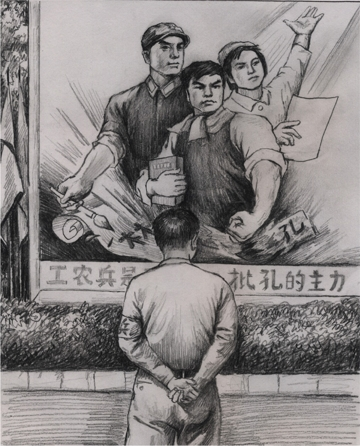

Cửu Bình 6: ĐCSTQ phá hoại văn hoá dân tộc (audio)
Tài liệu gốc: http://dajiyuan.com/gb/4/11/29/n731667.htm
0 – Dẫn nhập
1 – Đảng cộng sản là gì?
2 – Đảng cộng sản Trung Quốc xuất sinh như thế nào?
3 – Chính quyền bạo lực của Đảng cộng sản Trung Quốc.
4 – Đảng cộng sản, một lực lượng phản vũ trụ.
5 – Giang Trạch Dân và Đảng cộng sản Trung Quốc lợi dụng lẫn nhau để đàn áp Pháp Luân Công.
6 – Đảng cộng sản Trung Quốc phá hoại văn hoá dân tộc.
7 – Lịch sử giết chóc của Đảng cộng sản Trung Quốc.
8 – Bản chất tà giáo của Đảng cộng sản Trung Quốc.
9 – Bản tính lưu manh của Đảng cộng sản Trung Quốc.
Lời mở đầu
|
 |
Văn hóa là linh hồn của dân tộc. Đối với nhân loại thì nhân tố tinh thần này cũng quan trọng không kém các nhân tố vật chất như giống nòi và đất đai.
Sự phát triển văn hóa định ra lịch sử của nền văn minh của một đất nước. Sự phá hủy hoàn toàn văn hóa của một dân tộc dẫn tới sự tiêu vong của dân tộc đó. Những dân tộc cổ xưa sáng tạo ra các nền văn minh huy hoàng bị coi như đã biến mất khi nền văn hóa của họ biến mất, mặc dù người của các dân tộc đó có thể vẫn tồn tại. Trung Quốc là đất nước duy nhất trên thế giới có nền văn minh cổ đại được kế thừa liên tục trải qua trên 5000 năm. Việc phá hủy nền văn hóa truyền thống đó là một tội ác không thể tha thứ.
Nền văn hóa Trung Quốc, được tin là do Thần truyền xuống, đã bắt đầu với những thần thoại như Bàn Cổ tạo ra trời đất [1], Nữ Oa tạo ra con người [2], Thần Nông tìm ra hàng trăm loài thảo dược [3], Thương Hiệt phát minh ra chữ Hán [4]. “Người thuận theo đất, đất thuận theo trời, trời thuận theo Đạo, và Đạo thuận theo tự nhiên.” [5] Sự uyên thâm của Đạo gia về sự hòa hợp giữa người và trời đã chảy trong huyết mạch của nền văn hóa Trung Quốc. “Cái Đạo của Đại học là ở chỗ Đức sáng.” [6] Khổng Tử đã mở trường dạy học hơn 2000 năm trước và đã truyền cho xã hội tư tưởng của Nho giáo đại diện bởi năm đức chính là nhân, nghĩa, lễ, trí, tín. Trong thế kỷ đầu tiên, Phật giáo của Phật Thích Ca Mâu Ni đã truyền sang phương đông tới Trung Quốc với sự nhấn mạnh vào tính Thiện và sự cứu độ tất cả chúng sinh (từ bi phổ độ). Nền văn hóa Trung Quốc đã trở nên phong phú và sâu sắc hơn. Sau đó, Nho giáo, Đạo giáo, và Phật giáo đã trở thành các tín ngưỡng bổ trợ lẫn nhau trong xã hội Trung Quốc, và đưa triều đại nhà Đường (618-907 sau Công Nguyên) lên đến đỉnh cao của sự huy hoàng và thịnh vượng, nổi danh khắp thiên hạ.
Mặc dù đất nước Trung Quốc đã trải qua nhiều lần bị xâm lược và tấn công trong lịch sử, nền văn hóa Trung Quốc đã cho thấy một sức sống mãnh liệt, và tinh hoa của nó đã liên tục được truyền lại cho đời sau. Sự hòa hợp giữa trời và người (thiên nhân hợp nhất) đại biểu cho thiên văn học của tổ tiên chúng ta. Mọi người đều tin rằng ở hiền gặp lành và ác giả ác báo (thiện ác hữu báo). Một đức hạnh cơ bản là đừng làm cho người khác những gì mình không muốn. Trung, hiếu, tiết, nghĩa là tiêu chuẩn làm người trong xã hội, và năm đức hạnh chính của Nho giáo là nhân, nghĩa, lễ, trí, tín đã đặt nền tảng đạo đức cho từng cá nhân và toàn xã hội. Với những nguyên tắc này, văn hóa Trung Quốc thể hiện ra thành thật, lương thiện, hòa ái và bao dung. Sự tưởng nhớ của người Trung Quốc đối với những người đã quá cố cho thấy lòng tôn kính “trời, đất, vua, cha mẹ và thầy giáo” (thiên địa quân thân sư). Đây là sự thể hiện văn hóa của truyền thống cội nguồn của Trung Quốc bao gồm sự kính ngưỡng thần thánh (trời và đất), sự trung thành với đất nước (Quân vương), các giá trị gia đình cha mẹ, và sự kính trọng thầy giáo. Nội hàm vững chắc của văn hóa là truyền thống “Tôn sư trọng đạo”. Văn hóa truyền thống Trung Quốc tìm kiếm sự hài hòa giữa con người và vũ trụ, và chú trọng vào đạo đức và luân lý của từng cá nhân. Nó dựa trên tín ngưỡng tu luyện của Nho giáo, Phật giáo, và Đạo giáo, và đã cung cấp cho người Trung Quốc lòng khoan dung, sự tiến bộ xã hội, sự bảo vệ đạo đức con người, và tín ngưỡng chân chính.
Không giống như pháp luật đặt ra các quy định cứng nhắc, văn hóa có tác dụng như một chế ước mềm mại. Pháp luật thi hành việc trừng phạt sau khi tội ác đã xảy ra, trong khi văn hóa, bằng cách trau dồi đạo đức, ngăn ngừa không cho tội ác xảy ra. Đạo đức của một xã hội thường được thể hiện trong nền văn hóa của nó.
Trong lịch sử Trung Quốc, văn hóa truyền thống đã đạt tới đỉnh cao trong triều đại nhà Đường thịnh vượng, cùng lúc với đỉnh cao về sức mạnh của đất nước Trung Quốc. Khoa học cũng phát triển và có được danh tiếng độc nhất vô nhị trên toàn thế giới. Các học giả từ Châu Âu, Trung Đông, và Nhật Bản đã đến để học tập tại Trường An, kinh đô của triều đại nhà Đường. Các nước láng giềng của Trung Quốc đã coi Trung Quốc là nước bá chủ. “Nhiều nước đã đến để tỏ lòng kính trọng đối với Trung Quốc, mặc dù họ có thể cần phải phiên dịch thông qua nhiều thứ tiếng trung gian và phải qua nhiều cửa khẩu.” [7]
Sau triều đại nhà Tần (221-207 trước Công Nguyên), Trung Quốc thường bị các dân tộc thiểu số chiếm đóng. Điều này đã xảy ra trong các triều đại nhà Tùy (581-618 sau Công Nguyên), Đường (618-907 sau Công Nguyên), Nguyên (1271-1361 sau Công Nguyên) và Thanh (1644-1911 sau Công Nguyên) và trong một số thời đại khác khi các dân tộc thiểu số thành lập chế độ của riêng họ. Tuy nhiên, hầu như tất cả những dân tộc thiểu số này đều đã bị đồng hóa theo văn hóa Trung Quốc. Điều này cho thấy sức mạnh hợp nhất to lớn của văn hóa truyền thống Trung Quốc. Như Khổng Tử đã nói, “(Vì thế) nếu người ở xa không tuân theo, thì đưa họ đến gần bằng cách tu dưỡng văn hóa và đức hạnh (của chúng ta).” [8]
Từ khi giành được quyền lực năm 1949, Đảng Cộng sản Trung Quốc đã tập trung các nguồn lực của đất nước vào việc phá hủy nền văn hóa truyền thống của Trung Quốc. Ác ý này tuyệt đối không phải là xuất phát từ nhiệt huyết công nghiệp hóa của ĐCSTQ, cũng không phải là từ sự ngu dốt đơn thuần trong việc tôn thờ nền văn minh phương Tây. Mà nó xuất phát từ sự đối nghịch cố hữu về ý thức hệ của ĐCSTQ đối với văn hóa truyền thống của dân tộc. Vì vậy, việc phá hoại văn hóa Trung Quốc của ĐCSTQ đã được lập kế hoạch, tổ chức kỹ lưỡng, có hệ thống, và được hỗ trợ bởi việc sử dụng bạo lực của nhà nước. Kể từ khi thành lập, ĐCSTQ chưa bao giờ ngừng việc “cách mạng hóa” văn hóa Trung Quốc nhằm triệt để phá hủy tinh thần của nó.
Thậm chí còn hèn hạ hơn cả việc phá hoại văn hóa truyền thống là việc lạm dụng và lén lút thay đổi có chủ ý của ĐCSTQ đối với văn hóa truyền thống. ĐCSTQ đã cố ý làm nổi bật những phần đồi bại trong lịch sử của Trung Quốc, những thứ đã xảy ra khi con người xa rời các giá trị truyền thống, như tranh giành quyền lực trong nội bộ gia đình hoàng tộc, việc sử dụng các thủ đoạn và âm mưu, và việc thực hiện chế độ độc tài và chuyên quyền. ĐCSTQ đã sử dụng các ví dụ lịch sử này để giúp tạo nên một bộ chuẩn mực đạo đức, các cách tư duy, và hệ thống lý luận của riêng nó. Bằng cách đó, ĐCSTQ đã tạo ra một ấn tượng sai lầm rằng “văn hóa Đảng” là một sự kế thừa của văn hóa truyền thống Trung Quốc. ĐCSTQ thậm chí đã lợi dụng cả sự ác cảm của một số người đối với “văn hóa Đảng” để kích động việc từ bỏ hơn nữa đối với văn hóa truyền thống Trung Quốc đích thực.
Việc phá hoại văn hóa truyền thống của ĐCSTQ đã mang những hậu quả tai hại đến cho Trung Quốc. Không chỉ nhân dân đã mất đi các chuẩn mực đạo đức của mình, mà họ còn bị bắt buộc phải nhồi nhét vào đầu các tà thuyết của ĐCSTQ.
******************
I. Tại sao ĐCSTQ lại muốn phá hoại văn hóa truyền thống?
Truyền thống lâu đời của văn hóa Trung quốc — dựa trên tín ngưỡng và tôn trọng đạo đức
Văn hóa đích thực của đất nước Trung Quốc bắt đầu vào khoảng 5000 năm trước đây cùng với Hoàng Đế huyền thoại, người được coi là tổ tiên đầu tiên của nền văn minh Trung Quốc. Trên thực tế, Hoàng Đế cũng được coi là người sáng lập nên Đạo giáo, cũng được gọi là trường phái tư tưởng Hoàng Lão (Hoàng Lão chi học). Sự ảnh hưởng sâu sắc của Đạo giáo đối với Nho giáo có thể được thấy trong các câu nói của Nho giáo như: “Lập chí ở đạo, căn cứ ở đức, noi theo ở nhân, học rộng ở lục nghệ” và “Nếu một người nghe Đạo buổi sáng, người đó có thể chết mà không ân hận vào buổi chiều.” [9] Cuốn Chu Dịch, một ghi chép về trời và đất, âm và dương, các thay đổi của vũ trụ, sự thịnh suy của xã hội, và các quy luật của đời người, đã được những người theo Nho giáo coi là “Số một trong số tất cả các tác phẩm kinh điển của Trung Quốc”. Khả năng tiên tri của cuốn sách đã vượt xa những gì mà khoa học hiện đại có thể nhận thức được. Bên cạnh Đạo giáo và Nho giáo, Phật giáo, đặc biệt là trường phái Thiền Tông, đã có ảnh hưởng tinh tế nhưng sâu sắc đối với những người trí thức Trung Quốc.
Nho giáo là một phần của văn hóa Trung Quốc truyền thống chú trọng vào việc “nhập thế gian.” Nó nhấn mạnh vào đạo đức luân lý gia đình, trong đó hiếu kính cha mẹ đóng một vai trò cực kỳ quan trọng, dạy rằng “tất cả mọi lòng tốt đều bắt đầu từ lòng hiếu thảo” (Bách thiện hiếu vi tiên). Khổng Tử đề cao “nhân, nghĩa, lễ, trí, tín,” nhưng cũng nói, “Chẳng phải lòng hiếu thảo và tình cảm anh em là gốc rễ của lòng nhân từ hay sao?”
Luân thường đạo lý dựa trên nền tảng gia đình có thể được mở rộng một cách tự nhiên để hướng dẫn đạo đức xã hội. Lòng hiếu thảo có thể được mở rộng ra thành sự trung thành của quần thần đối với vua. Người ta nói rằng, “Hiếm có người nào có lòng hiếu thảo và tình cảm anh em lại có khuynh hướng phạm thượng với bề trên”. [10] Tình cảm anh em là mối quan hệ giữa anh và em, và có thể được mở rộng ra thành sự nghĩa hiệp và công bằng giữa bè bạn. Nho giáo dạy rằng trong gia đình phải là phụ từ tử hiếu, huynh hữu, đệ cung hay người cha phải từ ái, người con phải hiếu thảo, người anh phải thân thiện, và người em phải cung kính lễ phép. Ở đây, lòng từ tâm của người cha có thể được mở rộng thành sự nhân nghĩa của quân vương đối với quần thần. Chừng nào mà các truyền thống gia đình vẫn còn được duy trì thì đạo đức xã hội một cách tự nhiên cũng có thể được duy trì. “Tu thân, tề gia, trị quốc, bình thiên hạ”. [11]
Phật giáo và Đạo giáo là bộ phận chú trọng vào việc “xuất thế gian” trong văn hóa Trung Quốc truyền thống. Sự ảnh hưởng của Phật giáo và Đạo giáo có thể thấy trong tất cả các khía cạnh của cuộc sống con người. Trung y, khí công, phong thủy, và bói toán đều bắt nguồn sâu sắc từ Đạo giáo. Những môn này cũng như những khái niệm của Phật giáo về thiên quốc và địa ngục, thiện hữu thiện báo, ác hữu ác báo, cùng với luân thường đạo lý của Nho giáo, đã tạo nên cốt lõi của văn hóa Trung Quốc truyền thống.
Các tín ngưỡng Nho giáo, Phật giáo và Đạo giáo đã đem lại cho người Trung Quốc một hệ thống đạo đức rất ổn định, không thay đổi chừng nào trời đất vẫn còn tồn tại, “thiên bất biến, đạo cũng bất biến”. [12] Hệ thống đạo đức này là cơ sở cho sự bền vững, hòa bình và sự hài hòa trong xã hội.
Đạo đức thuộc về lĩnh vực tinh thần; vì vậy, nó thường mang tính khái niệm. Văn hóa biểu đạt hệ thống đạo đức trừu tượng đó thành ngôn ngữ mà mọi người có thể hiểu được.
Hãy lấy “Bốn tác phẩm kinh điển của Trung Quốc”, bốn tiểu thuyết nổi tiếng nhất trong văn hóa Trung Quốc, làm ví dụ. Tây Du Ký [13] là một câu chuyện thần thoại. Hồng Lâu Mộng [14] bắt đầu bằng một cuộc đối thoại giữa một hòn đá có linh hồn và Mang Mang đạo sĩ, Diệu Diệu chân nhân cùng Không Không đạo nhân trên đỉnh Vô Kê, núi Đại Hoang – đoạn này cho thấy những đầu mối của kịch tính giữa người với người diễn ra trong tiểu thuyết. Thủy Hử [15] bắt đầu bằng câu chuyện về thái úy Hồng, người nắm binh lực, đã vô ý thả 108 con yêu ma ra như thế nào. Truyền thuyết này giải thích về nguồn gốc của 108 vị anh hùng Lương Sơn Bạc. Tam Quốc Diễn Nghĩa [16] bắt đầu bằng một cảnh báo của trời về một thảm họa, và kết thúc bằng một đạo trời không thể cưỡng lại được là: “Hợp rồi tan, tan lại hợp, đó cũng là lẽ nhiệm mầu của trời đất vậy”. Những câu chuyện nổi tiếng khác, như Đông Chu Liệt Quốc [17] và Thuyết Nhạc Toàn Truyện (Chuyện đầy đủ về Nhạc Phi) [18], tất cả đều bắt đầu bằng những truyền thuyết như thế.
Việc sử dụng thần thoại của những nhà viết tiểu thuyết này không phải là một sự trùng hợp ngẫu nhiên, mà là sự phản ánh của một triết lý cơ bản của các trí thức Trung Quốc đối với tự nhiên và con người. Những tiểu thuyết này đã có một ảnh hưởng sâu sắc đối với tư tưởng của người Trung Quốc. Khi nói về “nghĩa”, mọi người thường nghĩ đến Quan Vũ (160-219 sau Công Nguyên) của Tam Quốc Diễn Nghĩa hơn là đến ý nghĩa của chính từ đó, nghĩa của ông đối với bạn bè đã vượt lên mây cao tới trời xanh như thế nào; lòng trung thành không thể lay chuyển của ông với bề trên và người anh em kết nghĩa là Lưu Bị đã làm mọi người thậm chí cả kẻ thù kính trọng ông như thế nào; lòng dũng cảm của ông trong chiến trận đã chiến thắng ngay cả trong các tình huống bi đát nhất như thế nào, trận chiến bại cuối cùng của ông trong trận đánh tại Mạch Thành; và, cuối cùng là, cuộc đối thoại của ông với con trai của mình sau khi ông đã trở thành thần tiên. Khi nói đến chữ “trung”, người Trung Quốc nghĩ ngay đến Nhạc Phi (1103-1141 sau Công Nguyên), một vị tướng đời nhà Tống đã phục vụ đất nước với lòng trung chính tuyệt đối, và Khổng Minh (181-234 sau Công Nguyên), thừa tướng của nước Thục trong thời Tam Quốc, người đã “dâng trọn cuộc đời cho đến khi trái tim ông ngừng đập.”
Sự ca ngợi trung và nghĩa của văn hóa Trung Quốc truyền thống đã được miêu tả đầy đủ trong những câu truyện sinh động của các tác giả này. Các nguyên tắc đạo đức trừu tượng mà họ tán dương đã được làm sáng tỏ và được thể hiện trong những thành ngữ văn hóa.
Đạo giáo chú trọng chân. Phật giáo chú trọng thiện, và Nho giáo coi trọng trung, thứ (vị tha), nhân, nghĩa. “Mặc dù có hình thức khác nhau, nhưng tất cả đều có chung một mục đích … tất cả đều khiến cho con người trở về với đức thiện.” [19] Đây là những khía cạnh giá trị nhất của văn hóa Trung Quốc truyền thống dựa trên cơ sở các tín ngưỡng Nho giáo, Phật giáo và Đạo giáo.
Văn hóa Trung Quốc truyền thống tràn đầy các khái niệm và nguyên tắc như Thiên, Đạo, Thần, Phật, mệnh, duyên, nhân, nghĩa, lễ, trí, tín, liêm, sỉ, trung, hiếu, tiết v.v… Nhiều người Trung Quốc có thể không biết chữ, nhưng họ vẫn quen với hí kịch truyền thống. Những hình thức văn hóa này đã là những phương cách quan trọng đối với người thường để học đạo đức truyền thống. Do đó, việc phá hoại của ĐCSTQ đối với văn hóa Trung Quốc truyền thống là một cú đánh trực tiếp vào đạo đức của người Trung Quốc và phá hủy nền tảng an định và hài hòa trong xã hội.
Tà thuyết Cộng sản đối lập với văn hóa truyền thống
Triết học” của Đảng Cộng sản hoàn toàn mâu thuẫn với văn hóa Trung Quốc truyền thống đích thực. Văn hóa truyền thống kính trọng thiên ý, như Khổng Tử đã từng nói, “Tử sinh hữu mệnh, phú quý tại thiên.” [20] Cả Phật giáo và Đạo giáo đều là các tín ngưỡng hữu thần, và tin vào sự luân hồi sinh tử, và quy luật nhân quả, thiện hữu thiện báo, ác hữu ác báo. Đảng Cộng sản, thì trái lại, không những tin vào thuyết vô thần mà còn “vô pháp vô thiên”. Nho giáo coi trọng gia đình, còn Bản Tuyên ngôn Cộng sản lại rõ ràng chủ trương bãi bỏ gia đình. Văn hóa truyền thống chỉ ra sự khác biệt giữa những gì của Trung Quốc với những gì của nước ngoài, còn Bản Tuyên ngôn Cộng sản lại chủ trương bãi bỏ tính dân tộc. Văn hóa Nho giáo đề cao lòng tốt đối với người khác, còn Đảng Cộng sản thì khuyến khích đấu tranh giai cấp. Nho giáo đề cao lòng trung thành với vua và tình yêu đất nước. Bản Tuyên ngôn Cộng sản thì đề xướng việc loại bỏ các quốc gia.
Để giành và duy trì quyền lực ở Trung Quốc, Đảng Cộng sản trước hết đã phải gieo trồng những tư tưởng vô đạo đức của nó trên đất Trung Quốc. Mao Trạch Đông đã tuyên bố, “Nếu chúng ta muốn lật đổ một chính thể, trước tiên chúng ta phải tuyên truyền, và làm công tác trong lĩnh vực tư tưởng.” [21] ĐCSTQ đã nhận ra rằng lý thuyết cộng sản bạo lực được duy trì bằng vũ lực là thứ rác rưởi của tư tưởng phương Tây và không thể trụ vững được trước lịch sử văn hóa sâu sắc 5000 năm tuổi của Trung Quốc. “Đã chót thì phải chét”. Vì thế ĐCSTQ đã hoàn toàn phá hủy văn hóa Trung Quốc truyền thống để chủ nghĩa Mác-xít – Lê-nin-nít có thể chiếm lĩnh chính trường Trung Quốc.
Văn hóa truyền thống là một chướng ngại đối với chế độ độc tài của ĐCSTQ
Mao Trạch Đông đã từng nói là ông ta không theo Đạo cũng không theo Trời. [22] Văn hóa Trung Quốc truyền thống không còn nghi ngờ gì nữa đã trở thành một chướng ngại lớn cho việc thách thức với Đạo và đấu tranh với Trời của ĐCSTQ.
Lòng trung thành trong văn hóa Trung Quốc truyền thống không có nghĩa là tận tâm một cách mù quáng. Trong mắt của dân, hoàng đế là “thiên tử”: có trời ở trên hoàng đế. Hoàng đế không thể lúc nào cũng đúng. Do đó luôn luôn cần phải có những giám quan để chỉ ra những sai lầm của hoàng đế. Hệ thống biên niên sử của Trung Quốc có những sử gia ghi chép lại mọi lời nói và hành động của hoàng đế. Những viên quan có học vấn cao có thể trở thành thầy giáo của vị thánh vương của họ, và những hành xử của hoàng đế được phán xét dựa trên các chuẩn mực kinh điển của Nho giáo. Nếu hoàng đế trở nên vô đạo đức, không ngộ Đạo, dân chúng có thể vùng lên để lật đổ ông ta, như trường hợp Thành Thang phạt Kiệt, hoặc Vũ Vương phạt Trụ. [23] Những cuộc nổi dậy này, xét từ văn hóa truyền thống, không bị coi là vi phạm lòng trung thành hay Đạo mà còn được coi là thay Trời hành Đạo. Khi Văn Thiên Tường (1236-1283 sau Công Nguyên) [24], một tướng lĩnh nổi tiếng thời nhà Tống, bị bắt làm tù nhân, ông đã từ chối không đầu hàng quân xâm lược Mông Cổ ngay cả khi Hoàng Đế đã cố gắng thuyết phục ông đầu hàng. Đây là bởi vì, vốn là một người theo Nho học, ông tin rằng “Dân là quan trọng bậc nhất; sau đó là đất nước; cuối cùng mới là vua.” (dân vi quý, xã tắc thứ chi, quân vi khinh) [25]
ĐCSTQ độc tài không có cách nào có thể chấp nhận những tín ngưỡng truyền thống như thế. ĐCSTQ muốn phong thánh cho những người lãnh đạo của chính nó và quảng bá sự sùng bái cá nhân, và vì vậy sẽ không để cho những khái niệm lâu đời như Trời, Đạo và Thần chi phối từ bên trên. ĐCSTQ nhận thức được rằng nếu chiểu theo những chuẩn mực của văn hóa truyền thống thì những gì nó làm sẽ bị coi là tội ác tày trời nhất đối với Trời và Đạo. ĐCSTQ cũng nhận thức được rằng chừng nào mà văn hóa truyền thống còn tồn tại, nhân dân sẽ không ca ngợi ĐCSTQ là “vĩ đại, quang vinh, và luôn luôn đúng.” Các học giả sẽ tiếp tục truyền thống “khuyên răn nhà vua dù có phải chấp nhận rủi ro cho sinh mạng của mình”, “bảo vệ công lý dù có phải hy sinh mạng sống của mình”, [26] và đặt nhân dân lên trên những người trị nước. Và nhân dân sẽ không trở thành những con rối của ĐCSTQ, và ĐCSTQ sẽ không thể bắt nhân dân suy nghĩ theo cách của mình.
Sự kính trọng trời, đất và thiên nhiên của văn hóa truyền thống đã trở thành một chướng ngại cho “cuộc chiến với thiên nhiên” của ĐCSTQ hòng “thay trời đổi đất.” Văn hóa truyền thống quý trọng sinh mạng con người, dạy rằng “bất cứ tình huống nào liên quan đến sinh mệnh con người cũng phải được xử lý với sự cẩn trọng nhất.” Những nhận thức như vậy là trở ngại cho sự diệt chủng hàng loạt và thống trị bằng bạo lực của ĐCSTQ. Chuẩn mực đạo đức tối cao của văn hóa truyền thống là “Đạo Trời” đã cản trở việc bóp méo các nguyên tắc đạo đức của ĐCSTQ. Với những lý do này, ĐCSTQ đã coi văn hóa truyền thống như là một kẻ thù trong nỗ lực nhằm củng cố quyền lực của nó.
Văn hóa truyền thống thách thức tính hợp pháp của chính quyền của ĐCSTQ
Văn hóa Trung Quốc truyền thống tin vào Thần và Thiên ý. Chấp nhận Thiên ý có nghĩa là người trị nước phải thông thái, tuân theo Đạo và phải thuận theo vận mệnh. Chấp nhận tín ngưỡng vào Thần nghĩa là chấp nhận rằng quyền lực tối cao đối với con người thuộc về Thượng Đế.
Nguyên tắc thống trị của ĐCSTQ được tóm tắt như sau, “Dây xích truyền thống sẽ không bao giờ trói buộc chúng ta được nữa, sinh ra chúng ta là những người lao động cần cù không còn phải làm nô lệ nữa. Trái đất sẽ mọc lên trên một nền móng mới; chúng ta không phải là vô dụng; mà chúng ta sẽ là tất cả.” [27]
ĐCSTQ tuyên truyền chủ nghĩa duy vật lịch sử, nói rằng Chủ nghĩa Cộng sản là thiên đường trên mặt đất, và con đường đi tới đó là do những người vô sản tiên phong hay Đảng Cộng sản lãnh đạo. Tín ngưỡng vào Thần vì vậy đã trực tiếp thách thức tính hợp pháp của chính quyền của ĐCSTQ.
******************
II. Đảng Cộng sản phá hoại văn hóa truyền thống như thế nào?
Mọi việc mà ĐCSTQ làm đều là để phục vụ một mục đích chính trị. Để chiếm, duy trì và củng cố chế độ bạo chính của nó, ĐCSTQ cần phải thay thế nhân tính bằng Đảng tính tà ác của nó, và thay thế văn hóa truyền thống Trung Quốc bằng văn hóa Đảng của nó là “giả, ác, đấu”. Việc phá hoại và thay thế này bao gồm những thứ hữu hình như các di tích văn hóa, các di tích lịch sử và các cuốn sách cổ và những thứ phi vật thể như quan niệm truyền thống về đạo đức, cuộc sống và thế giới. Nó liên quan đến tất cả các khía cạnh của cuộc sống con người bao gồm cách hành xử, suy nghĩ và lối sống. Đồng thời, ĐCSTQ coi các biểu hiện văn hóa ở bề mặt và không quan trọng là “tinh hoa”, giữ lại chúng, và sau đó trương thứ “tinh hoa” này lên để làm bình phong. Đảng giữ lại vẻ bề ngoài của truyền thống và thay thế truyền thống đích thực bằng văn hóa Đảng. Sau đó nó lừa dối nhân dân và cộng đồng quốc tế đằng sau cái vẻ bề ngoài là “kế thừa và phát triển” văn hóa truyền thống Trung Quốc.
Cùng một lúc tiêu diệt cả ba tôn giáo
Do thực tế là văn hóa truyền thống bắt nguồn từ Nho giáo, Phật giáo và Đạo giáo, bước đầu tiên của ĐCSTQ trong việc phá hủy văn hóa truyền thống là tiêu diệt biểu hiện của các nguyên tắc thần thánh nơi thế gian con người, nhổ rễ cả ba tôn giáo tương ứng với các nguyên tắc thần thánh đó.
Tất cả ba tôn giáo chính là Nho giáo, Phật giáo và Đạo giáo, đã gặp phải việc phá hoại trong các thời kỳ lịch sử khác nhau. Hãy lấy Phật giáo làm ví dụ. Nó đã phải chịu 4 lần đại nạn trong lịch sử là việc 4 hoàng đế Trung Quốc “tam Vũ nhất Tông” đàn áp các Phật tử. Hoàng đế Thái Vũ [28] của triều đại Bắc Ngụy (386-534 sau Công Nguyên) và Hoàng đế Vũ Tông [29] của triều đại nhà Đường (618-907 sau Công Nguyên) đều đã cố gắng tiêu diệt Phật giáo để Đạo giáo phát triển. Hoàng đế Vũ [30] của triều đại Bắc Chu (557-581 sau Công Nguyên) đã cố gắng tiêu diệt cả Phật giáo và Đạo giáo, nhưng vẫn tôn kính Nho giáo. Hoàng đế Chu Thế Tông [31] của triều đại Hậu Chu (951-960 sau Công Nguyên) đã cố gắng tiêu diệt Phật giáo chỉ là để dùng các tượng Phật để đúc tiền, và đã không động đến Đạo giáo và Nho giáo.
ĐCSTQ là thể chế duy nhất đã đồng thời tiêu diệt cả ba tôn giáo.
Không lâu sau khi ĐCSTQ thành lập chính quyền, nó đã bắt đầu phá hủy các đền chùa, đốt kinh thư và bắt các tăng ni Phật tử phải hoàn tục. Nó cũng không nhẹ tay hơn chút nào trong việc phá hủy các địa điểm tôn giáo khác. Vào những năm 1960, hiếm có địa điểm tôn giáo nào còn tồn tại ở Trung Quốc. Cuộc Đại Cách mạng Văn hóa đã mang đến những thảm họa văn hóa và tôn giáo thậm chí còn thảm khốc hơn trong chiến dịch “Phá tứ cựu” [32] – nghĩa là: phá bỏ các quan niệm cũ, văn hóa cũ, phong tục cũ và thói quen cũ.
Ví dụ, ngôi chùa Phật giáo đầu tiên ở Trung Quốc là Chùa Bạch Mã [33] được xây dựng vào thời kỳ đầu của triều đại nhà Đông Hán (25-220 sau Công Nguyên) ở ngoại ô thành phố Lạc Dương, tỉnh Hà Nam. Nó vinh dự được coi là “Cái nôi của Phật giáo ở Trung Quốc” và là “Ngôi nhà của Người sáng lập”. Trong chiến dịch “Phá Tứ Cựu”, Chùa Bạch Mã tất nhiên đã không thể thoát khỏi bị cướp phá.
Có một đội sản xuất Chùa Bạch Mã ở gần ngôi chùa. Bí thư chi bộ Đảng đã chỉ đạo nông dân đến phá tan ngôi chùa trên danh nghĩa “cách mạng”. Những bức tượng Mười tám vị La Hán bằng đất sét hơn 1000 năm tuổi được làm trong triều đại nhà Liêu (916-1126 sau Công Nguyên) đã bị phá hủy. Kinh Bối Diệp [34] do một vị cao tăng người Ấn Độ mang đến Trung Quốc 2000 năm trước đã bị đốt. Một vật quý hiếm, Ngựa ngọc bích, đã bị đập tan thành từng mảnh. Vài năm sau, Quốc vương đang lưu vong của Cam-pu-chia là Nô-rô-đôm Si-ha-núc có một đề nghị đặc biệt là muốn đến thăm Chùa Bạch Mã. Chu Ân Lai, thủ tướng Trung Quốc lúc bấy giờ, đã vội vã ra lệnh chuyển tới Lạc Dương kinh Bối Diệp lưu giữ trong Hoàng Thành ở Bắc Kinh và các bức tượng Mười tám vị La Hán làm trong đời nhà Thanh từ Chùa Bích vân ở vườn Hương Sơn [35] ngoại ô Bắc Kinh. Với sự thay thế giả này, một khó khăn về mặt ngoại giao đã được “giải quyết”. [36]
Cuộc Cách mạng Văn hóa bắt đầu vào tháng 5 năm 1966. Trên thực tế nó đã “cách mạng hóa” văn hóa Trung Quốc theo cách phá hoại. Bắt đầu từ tháng 8 năm 1966, ngọn lửa điên cuồng của “Phá Tứ Cựu” đã đốt cháy toàn bộ đất nước Trung Quốc. Bị coi là những vật thể của “chế độ phong kiến, chủ nghĩa tư bản và chủ nghĩa xét lại”, các đền chùa của Phật giáo, Đạo giáo, các bức tượng Phật, các danh thắng cổ tích, các bức thư pháp, các tác phẩm mỹ thuật hội họa và đồ cổ đã trở thành những mục tiêu phá hoại chính của Hồng Vệ binh. [37] Hãy lấy các bức tượng Phật làm ví dụ. Có 1000 pho tượng Phật được chạm khắc ngọc lưu ly trên đỉnh Núi Vạn thọ trong Di Hòa Viên [38] ở Bắc Kinh. Sau “Phá Tứ Cựu”, tất cả đều đã bị hư hại. Không có pho tượng nào còn nguyên ngũ quan nữa.
Thủ đô của đất nước là như thế này, và các vùng khác cũng như vậy. Thậm chí cả những địa phương ở xa cũng không thoát.
Có ngôi chùa Thiên Thai ở huyện Đại, tỉnh Sơn Tây. Nó được xây dựng trong thời Thái Duyên của triều đại Bắc Ngụy 1600 năm trước và có những bức tượng và bích họa rất quý. Mặc dù nó nằm ở một sườn đồi khá xa trung tâm của huyện, những người tham gia vào “Phá Tứ Cựu” đã bất chấp khó khăn và quét sạch các bức tượng và bích họa ở đó… Chùa Lạng Thiên, [39] nơi Lão Tử đã từng giảng Đạo và để lại quyển Đạo Đức Kinh nổi tiếng 2500 năm trước, nằm ở huyện Chu Chí tỉnh Thiểm Tây. Xung quanh nơi Lão Tử đã từng giảng Đạo, trong vòng bán kính 10 dặm [40], có hơn 50 di tích lịch sử, bao gồm chùa Tông Thánh Cung (Tôn Kính Hiền Nhân) mà Hoàng Đế Đường Cao Tổ Lý Uyên Vi [41] đã xây dựng để bày tỏ lòng kính trọng đối với Lão Tử hơn 1300 năm trước. Bây giờ chùa Lạng Thiên và các di tích lịch sử khác đã bị phá hủy, và tất cả các Đạo sĩ đã bị bắt phải rời đi. Theo quy định của Đạo giáo, một khi đã trở thành Đạo sĩ, thì sẽ không bao giờ cạo râu hay cắt tóc nữa. Tuy nhiên, bây giờ các Đạo sĩ bị bắt phải cắt tóc, cởi bỏ áo choàng của Đạo sĩ, và trở thành thành viên của các công xã nhân dân. [42] Một số trong số họ đã lấy con gái của các nông dân địa phương và trở thành con rể của họ… Tại các thánh địa của Đạo giáo trong núi Lao Sơn ở tỉnh Sơn Đông, Thái Bình Cung, Thượng Thanh Cung, Hạ Thanh Cung, Đấu Mỗ Cung, Hoa Nghiêm Am, Ngưng Chân Quan, Quan Đế Miếu, ‘tượng thánh, bình cúng tế, cuốn kinh Phật, di vật văn hóa, và miếu bia tất cả đều đã bị đập tan và đốt trụi’… Văn Miếu ở tỉnh Cát Lâm là một trong bốn ngôi miếu nổi tiếng của Nho giáo ở Trung Quốc. Trong “Phá Tứ Cựu”, nó đã bị phá hoại nghiêm trọng. [43]
Một cách phá hoại tôn giáo đặc biệt
Lê nin đã từng nói, “Cách dễ nhất để chiếm một pháo đài là từ bên trong.” Là con cháu của chủ nghĩa Mác-Lê, ĐCSTQ cũng tự nhiên ngầm hiểu điều này.
Trong “Đại thừa Niết bàn Kinh,” [44] Phật Thích Ca Mâu Ni đã tiên đoán rằng sau khi Ông nhập niết bàn, ma quỷ sẽ chuyển sinh vào làm tăng ni, và nam nữ cư sĩ Phật giáo để phá hoại Pháp. Tất nhiên, chúng ta không thể kiểm chứng xem Phật Thích Ca Mâu Ni muốn nói đến điều gì một cách chính xác. Tuy nhiên, việc phá hoại Phật giáo của ĐCSTQ thực sự đã bắt đầu bằng cách thành lập một “mặt trận thống nhất” với một số Phật tử. Thậm chí họ đã cử một số đảng viên cộng sản bí mật trực tiếp xâm nhập vào trong tôn giáo và phá hoại từ bên trong. Trong một cuộc họp phê bình trong Cách mạng Văn hóa, có người đã chất vấn Triệu Phác Sơ, Phó chủ tịch Giáo hội Phật giáo Trung Quốc lúc bấy giờ là, “Ông là một Đảng viên Cộng sản, tại sao ông lại tin vào Phật giáo?”
Phật Thích Ca Mâu Ni đã đạt ngộ hoàn toàn và tối cao thông qua “Giới Định Huệ.” Vì vậy trước khi nhập niết bàn, Ông đã dạy các đồ đệ của mình là phải “giữ gìn và tôn trọng các giới cấm, không được buông bỏ hay vi phạm”. Ông cũng đã cảnh báo, “Những người vi phạm giới cấm sẽ bị Trời, rồng, quỷ và Thần ghê tởm. Tai tiếng của họ sẽ lan xa và rộng… Khi cuộc sống của họ kết thúc, họ sẽ phải chịu đựng đau khổ trong địa ngục vì tội nghiệp của mình, và sẽ phải đối mặt với sự phán quyết cuối cùng không lay chuyển được. Sau đó họ sẽ đi ra. Họ sẽ phải tiếp tục chịu đau khổ bằng cách mang thân ma đói và súc sinh. Họ sẽ phải chịu đau khổ trong vòng luân hồi như thế vô tận và không ngưng nghỉ.” [45]
Những “Phật tử” chính trị này đã giả câm giả điếc trước những lời cảnh báo của Phật. Năm 1952, ĐCSTQ cử đại diện đến tham dự lễ ra mắt của Giáo hội Phật giáo Trung Quốc. Tại buổi lễ, nhiều “Phật tử” trong Giáo hội đã đề nghị bãi bỏ những giới cấm của Phật. Họ nói rằng những quy định này đã gây ra cái chết của nhiều thanh niên nam nữ. Một số người thậm chí còn biện hộ rằng “mọi người phải được tự do tin theo bất cứ tôn giáo nào. Tăng ni nên được tự do lập gia đình, uống rượu, và ăn thịt. Không ai nên can thiệp vào những việc này.” Vào lúc đó, Sư Phụ Hư Vân có mặt tại buổi lễ và thấy rằng Phật giáo đang phải đối mặt với nguy cơ bị hủy diệt ở Trung Quốc. Ông đã bước lên phản đối những đề xuất này và đề nghị giữ gìn những giới cấm và y phục của Phật giáo. Sư Phụ Hư Vân sau đó đã bị phỉ báng, và bị dán nhãn là “phản cách mạng.” Ông bị giam giữ trong phòng trụ trì, và không được ăn uống gì cả. Thậm chí ông còn không được ra khỏi phòng để sử dụng nhà vệ sinh. Ông cũng bị ra lệnh phải giao nộp vàng, bạc và súng đạn. Khi ông trả lời rằng ông không có những thứ đó, ông đã bị đánh đập tàn nhẫn tới mức xương sọ của ông bị rạn nứt, chảy máu và gẫy xương sườn. Lúc đó ông đã 112 tuổi. Quân cảnh đã đẩy ông ngã từ trên giường xuống đất. Ngày hôm sau, khi chúng quay trở lại và thấy ông vẫn còn sống, chúng lại tiếp tục đánh đập ông rất tàn nhẫn.
Giáo hội Phật giáo Trung quốc được thành lập năm 1952 và Giáo hội Đạo giáo Trung quốc được thành lập vào năm 1957, cả hai đều đã tuyên bố rõ ràng trong bản tuyên bố thành lập của mình rằng họ sẽ “theo sự lãnh đạo của chính quyền nhân dân.” Trên thực tế, họ phải theo sự lãnh đạo của ĐCSTQ vô thần. Cả hai giáo hội đều ngụ ý rằng họ sẽ tích cực tham gia vào các hoạt động sản xuất và xây dựng, và thực thi các chính sách của chính quyền. Họ đã bị biến thành các tổ chức hoàn toàn trần tục. Còn những Phật tử và Đạo sĩ hết lòng tuân theo các giới cấm thì bị dán nhãn là phản cách mạng hay thành viên của các giáo phái mê tín và hội kín. Dưới khẩu hiệu cách mạng là “làm trong sạch các Phật tử và Đạo sĩ”, họ đã bị bỏ tù, bị bắt phải đi “cải tạo lao động” hoặc thậm chí bị tử hình. Ngay cả các tôn giáo được truyền đến từ phương Tây, như Cơ Đốc giáo và Thiên Chúa giáo cũng không thoát khỏi bị phá hoại.
Dựa trên thống kê được đưa ra trong cuốn sách Đảng Cộng sản Trung quốc đàn áp các tín đồ Cơ Đốc Giáo như thế nào xuất bản năm 1958, thậm chí một số ít các tài liệu đã được công bố tiết lộ rằng trong số những linh mục bị buộc tội là “địa chủ” hoặc “cường hào”, thật khủng khiếp là 8840 người đã bị giết chết và 39200 người đã bị bắt vào các trại lao động cưỡng bức. Trong số những linh mục bị buộc tội là “phản cách mạng”, 2450 người đã bị giết chết, và 24800 người bị bắt vào những trại lao động cưỡng bức. [46]
Tôn giáo là một cách để con người thoát khỏi thế giới trần tục và tu luyện bản thân mình. Họ nhấn mạnh vào “bờ bên kia” (bờ của giác ngộ hoàn toàn) và “thiên đường”. Phật Thích Ca Mâu Ni đã từng là một Hoàng tử Ấn Độ. Để tìm kiếm sự giải thoát [47], một trạng thái mà con người có thể đạt được sự yên tâm, có trí huệ cao hơn, được giác ngộ hoàn toàn, và niết bàn, [48] Ông đã từ bỏ ngai vàng và đi vào rừng để tu luyện bằng cách chịu đựng gian khổ và cực nhọc. Trước khi Chúa Giê Su khai ngộ, ma quỷ mang Ông tới một đỉnh núi, và cho Ông thấy tất cả các vương quốc trên thế giới với tất cả sự tráng lệ của nó. Quỷ nói, “Nếu ông cúi xuống lạy tôi, tôi sẽ cho ông tất cả những thứ này.” Nhưng Chúa Giê Su đã không bị cám dỗ. Còn những hòa thượng và linh mục chính trị thành lập mặt trận thống nhất với ĐCSTQ đã nói hàng loạt những câu lừa đảo và dối trá như “Phật giáo nhân gian”, và “tôn giáo là chân lý, và chủ nghĩa xã hội cũng vậy”. Họ nói rằng “không có mâu thuẫn giữa bờ bên này và bờ bên kia.” Họ khuyến khích các Phật tử và Đạo sĩ truy cầu hạnh phúc, danh lợi, của cải và địa vị trong đời này, và đã thay đổi các học thuyết và ý nghĩa của tôn giáo.
Phật giáo nghiêm cấm sát sinh. ĐCSTQ thì giết người như diệt ruồi trong các cuộc “đàn áp phản cách mạng.” [49] Do đó các hòa thượng chính trị đã xào nấu ra những ngụy biện rằng “giết những kẻ phản cách mạng là từ bi vĩ đại hơn nữa”. Trong cuộc “Chiến tranh chống Mỹ xâm lược và giúp đỡ Triều Tiên” (1950-1953) [50], các hòa thượng còn bị đưa ra tiền tuyến để bắn giết.
Hãy lấy Cơ Đốc Giáo làm một ví dụ nữa. Vào năm 1950, Ngô Diệu Tông [51] đã thành lập một giáo hội “Tam Tự” theo các nguyên tắc tự quản, tự dưỡng và tự truyền. Ông ta nói rằng họ sẽ dứt bỏ khỏi “chủ nghĩa đế quốc” và tích cực tham gia cuộc “Chiến tranh chống Mỹ xâm lược và giúp đỡ Triều Tiên”. Một người bạn tốt của ông ta đã bị bỏ tù hơn 20 năm vì từ chối không gia nhập “Tam Tự” và đã phải chịu đủ các kiểu tra tấn và nhục hình. Khi ông hỏi Ngô Diệu Tông, “Anh nghĩ thế nào về những thần thông mà Chúa Giê Su đã thi triển?” Ngô trả lời, “Tôi đã vứt bỏ tất cả chúng rồi”.
Không công nhận những thần thông mà Chúa Giê Su đã thi triển cũng đồng nghĩa với việc không công nhận thiên đường của Chúa Giê Su. Làm thế nào mà một người có thể được coi là tín đồ Cơ Đốc Giáo khi mà người đó thậm chí không công nhận cả thiên đường mà Chúa Giê Su đã đi lên? Tuy nhiên, với tư cách là người sáng lập của giáo hội “Tam Tự”, Ngô Diệu Tông đã trở thành một ủy viên của Ủy ban Thường vụ Hội nghị Hiệp thương Chính trị. Khi ông ta bước vào Đại lễ đường Nhân dân [52], ông ta hẳn là đã quên hết những lời dạy của Chúa Giê Su. “Ngươi hãy hết lòng, hết linh hồn, hết ý mà yêu mến Chúa, là Ðức Chúa Trời ngươi. Ấy là điều răn thứ nhứt và lớn hơn hết.” (Ma-thi-ơ, 22:37-38) “Vậy, hãy trả cho Sê-sa vật gì của Sê-sa; và trả cho Ðức Chúa Trời vật gì của Ðức Chúa Trời” (Ma-thi-ơ, 22:21) (Chú thích của người dịch sang tiếng Việt: chúng tôi đã trích dẫn nguyên văn đoạn này từ bản Kinh Thánh tiếng Việt tại địa chỉ: http://tinlanh.com/kinhthanh/mathio.html)
ĐCSTQ đã tịch thu các tài sản của chùa, bắt các tăng ni phải nghiên cứu chủ nghĩa Mácxít-Lêninnít để tẩy não họ, và thậm chí còn bắt họ phải lao động cưỡng bức. Ví dụ, có một “công trường Phật giáo” ở thành phố Ninh Ba, tỉnh Chiết Giang. Hơn 25000 tăng ni đã từng bị bắt phải làm việc ở đó. Điều lố bịch hơn là ĐCSTQ khuyến khích các tăng ni lập gia đình để làm cho Phật giáo tan rã. Ví dụ, ngay trước Ngày Quốc tế Phụ nữ 8/3 năm 1951, Hội Liên hiệp Phụ nữ thành phố Tràng Sa, tỉnh Hồ Nam đã ra lệnh cho tất cả các ni cô trong tỉnh phải quyết định lập gia đình trong một vài ngày. Hơn nữa, các hòa thượng trẻ khỏe đã bị bắt phải nhập ngũ và bị đưa ra chiến trường làm bia đỡ đạn! [53]
Nhiều tôn giáo ở Trung Quốc đã bị tan rã dưới sự đàn áp tàn bạo của ĐCSTQ. Những người là tinh hoa chân chính của Phật giáo và Đạo giáo đã bị đàn áp. Trong số những người còn lại, nhiều người đã quay trở lại cuộc sống trần tục, và nhiều người khác là những Đảng viên Cộng sản hoạt động bí mật chuyên mặc áo cà sa, [54] áo choàng Đạo sĩ hay áo dài linh mục để bóp méo Kinh Phật, Đạo Giáo và Kinh Thánh và để tìm cách biện hộ cho các hành động của ĐCSTQ trong những học thuyết này.
Phá hủy văn vật
Việc phá hủy văn vật là một phần quan trọng trong việc phá hoại văn hóa truyền thống của ĐCSTQ. Trong “Phá Tứ Cựu”, nhiều quyển sách quý độc nhất vô nhị, các bức thư pháp, và những bức họa do các nhà trí thức sưu tập đã bị quẳng vào lửa hoặc nghiền vụn thành bột giấy. Chương Bá Quân [55] có một bộ sưu tập gia đình khoảng trên 10000 cuốn sách. Những người cầm đầu Hồng Vệ binh đã đốt sách để lấy lửa sưởi ấm cho mình. Những gì còn lại đã bị đem đến nhà máy giấy và bị nghiền vụn thành bột giấy.
Chuyên gia phục chế hội họa và thư pháp, Hồng Thu Thanh, là một lão nhân được biết đến như là “thần y” của các bức tranh và thư pháp cổ. Ông đã phục chế vô số các kiệt tác tầm cỡ thế giới, như tranh phong cảnh đời Tống Huy Tông [56], tranh tre của Tô Đông Pha [57], và các bức tranh của Văn Trưng Minh [58] và Đường Bá Hổ [59]. Qua nhiều thập kỷ, hầu hết hàng trăm bức tranh và thư pháp cổ mà ông phục chế đã trở thành một bộ sưu tập hàng đầu quốc gia. Các bức tranh và thư pháp mà ông đã nhọc công sưu tập đã bị dán nhãn là “Tứ Cựu” và bị quẳng vào lửa. Sau đó, ông Hồng đã nói trong nước mắt, “Hơn 100 cân [60] (50 kg) tranh và thư pháp, phải mất lâu lắm mới đốt hết!” [61]
Việc đời thay thế nhau,
Luân chuyển thành kim cổ;
Non sông lưu danh tích,
Đời đời ta ngưỡng xem” [62]
Nếu nhân dân Trung Quốc ngày nay vẫn còn nhớ một phần lịch sử của mình, có thể họ sẽ có một cảm nhận khác khi ngâm bài thơ của Mạnh Hạo Nhiên này. Các di tích lịch sử sông núi nổi tiếng đã bị phá hủy và đã biến mất trong cơn bão “Phá Tứ Cựu.” Không chỉ là Lan Đình, nơi Vương Hy Chi [63] đã viết tác phẩm nổi tiếng Lan Đình Tập Tự [64] đã bị phá hủy, mà phần mộ của Vương Hy Chi cũng đã bị đập phá. Tư gia của Ngô Thừa Ân [65] ở tỉnh Giang Tô cũng bị đánh sập. Tư gia của Ngô Kính Tử [66] ở tỉnh An Huy cũng bị đập tan, bia đá in bài viết bằng tay Túy Ông Đình Ký [67] của Tô Đông Pha cũng đã bị “những nhà cách mạng trẻ” [68] lật đổ và các chữ in trên bia đá cũng bị mài nhẵn.
Tinh hoa của văn hóa Trung Quốc đã được kế thừa và tích lũy qua hàng nghìn năm. Một khi đã bị phá hủy thì không thể khôi phục lại được nữa. Nhưng ĐCSTQ đã phá hoại nó dưới danh nghĩa “cách mạng” mà không thương tiếc hay xấu hổ gì. Khi chúng ta luyến tiếc Cung điện mùa Hè cổ, được biết đến như là “cung điện của các cung điện”, bị Liên quân Anh-Pháp đốt cháy trụi, khi chúng ta luyến tiếc kiệt tác Bách khoa Toàn thư Yongle [69] bị ngọn lửa chiến tranh của quân xâm lược phá hủy, thì làm sao chúng ta có thể lường trước được rằng sự phá hủy do ĐCSTQ gây ra lại còn lan rộng, lâu dài và triệt để hơn gấp nhiều lần so với sự phá hủy do bất cứ quân xâm lược nào gây ra?
Phá hủy các tín ngưỡng tinh thần
Cùng với việc phá hủy các hình thức vật thể của tôn giáo và văn hóa, ĐCSTQ cũng đã dùng hết khả năng để phá hủy các đặc trưng tinh thần của nhân dân đã được hình thành bởi tín ngưỡng và văn hóa.
Hãy lấy việc ĐCSTQ đối xử với các tín ngưỡng dân tộc làm ví dụ. ĐCSTQ coi truyền thống của những người theo đạo Hồi là một trong “Tứ Cựu” – cựu tư tưởng, cựu văn hóa, cựu truyền thống và cựu tập quán. Do đó, ĐCSTQ đã bắt những người theo đạo Hồi phải ăn thịt lợn. Những người nông dân theo đạo Hồi và những nhà thờ Hồi giáo bị bắt phải nuôi lợn, và mỗi hộ gia đình mỗi năm phải cung cấp cho nhà nước hai con lợn. Hồng Vệ binh thậm chí còn bắt Đức Đệ Nhị Đại Hoạt Phật, Lạt Ma Ban Thiền ở Tây Tạng, phải ăn phân người. Họ ra lệnh cho ba hòa thượng Chùa Cấp Lạc ở thành phố Cáp Nhĩ Tân, tỉnh Hắc Long Giang, là ngôi chùa Phật giáo lớn nhất được xây dựng trong thời hiện đại (1921), phải cầm một tấm bảng áp phích ghi dòng chữ, “Địa ngục với Kinh – chúng chứa đầy phân”.
Vào năm 1971, Lâm Bưu [70], Phó Chủ tịch Ban Chấp hành Trung ương ĐCSTQ, đã cố gắng chạy trốn khỏi Trung Quốc nhưng đã bị chết khi máy bay chở ông bị rơi ở Undurkhan, Mông Cổ. Sau đó, người ta tìm thấy trong nhà của Lâm Bưu ở Mao Gia Loan, Bắc Kinh một số câu nói của Khổng Tử. ĐCSTQ vì vậy đã khởi động một cuộc vận động điên cuồng “Phê bình Khổng Tử”. Một nhà văn có bút danh Lương Hiệu [71] đã đăng một bài trên tạp chí Hồng Kỳ, là tạp chí cổ động của ĐCSTQ, với nhan đề “Khổng Tử là ai?” Bài báo miêu tả Khổng Tử như là một “người điên muốn quay ngược lịch sử”, và là một “kẻ mị dân láu cá và lừa bịp”. Theo sau đó là một chuỗi các tranh và bài hát đả kích phỉ báng Khổng Tử.
Bằng cách này, sự trang nghiêm và thần thánh của tôn giáo và văn hóa đã bị hủy diệt.
Sự phá hủy không có hồi kết thúc
Ở Trung Quốc cổ xưa, chính quyền trung ương chỉ quản lý đến cấp huyện, còn ở dưới cấp huyện là các thị tộc có quyền tự trị. Như vậy trong lịch sử Trung Quốc, việc phá hoại, như “đốt sách và chôn sống Nho sĩ” của Tần Thủy Hoàng [72] trong triều đại nhà Tần (221-207 trước Công Nguyên) và bốn chiến dịch tiêu diệt Phật giáo giữa thế kỷ thứ năm và thứ mười của “Tam Vũ Nhất Tông”, đều được áp đặt từ trên xuống, và đã không thể tiêu diệt được văn hóa. Các tư tưởng và kinh điển Phật giáo và Nho giáo vẫn tiếp tục tồn tại trong xã hội. Ngược lại, chiến dịch “Phá Tứ Cựu” do những thanh thiếu niên học sinh được ĐCSTQ xúi giục thực hiện là một phong trào quần chúng trên toàn quốc với “lòng nhiệt tình tự phát”. Việc mở rộng chính quyền của ĐCSTQ tới mọi làng xã thông qua các chi bộ Đảng cấp làng xã đã kiểm soát xã hội chặt đến mức mà phong trào “cách mạng” của ĐCSTQ đã mở rộng không có giới hạn và đã ảnh hưởng tới tất cả mọi người trên mọi phân đất của lãnh thổ Trung Quốc.
Chưa bao giờ trong lịch sử lại có một vị hoàng đế nào nhổ tận rễ khỏi tâm trí nhân dân những gì mà họ coi là tốt đẹp nhất và thần thánh nhất, thông qua việc tuyên truyền phỉ báng và vu khống cộng với bạo lực, như ĐCSTQ đã làm. Việc tiêu diệt tín ngưỡng thường có ảnh hưởng lâu dài hơn việc phá hủy đơn thuần về mặt vật chất.
Cải tạo trí thức
Chữ viết của người Trung Quốc là hiện thân của tinh hoa 5000 năm văn minh. Tượng hình và phát âm của mỗi chữ, và các thành ngữ và hàm nghĩa văn chương tạo thành từ sự kết hợp của các chữ, tất cả đều biểu đạt các ý nghĩa văn hóa sâu sắc. ĐCSTQ đã không chỉ đã đơn giản hóa chữ viết Trung Quốc, mà còn cố gắng thay thế chúng bằng hệ thống “phiên âm” La-tinh, loại bỏ tất cả truyền thống văn hóa khỏi các chữ viết và ngôn ngữ Trung Quốc. Nhưng kế hoạch thay thế đó đã thất bại, nên đã không gây thiệt hại hơn nữa cho ngôn ngữ Trung Quốc. Tuy nhiên, những người trí thức Trung Quốc thừa kế văn hóa truyền thống đó đã không may mắn như vậy.
Trước năm 1949, Trung Quốc có khoảng hai triệu trí thức. Mặc dù một số đã học tập ở các nước phương Tây, họ vẫn còn giữ lại một số tư tưởng Nho giáo. Chắc chắn là ĐCSTQ không thể buông lỏng việc kiểm soát họ, bởi vì là các thành viên của tầng lớp “học giả quý tộc” truyền thống, cách nghĩ của họ đóng vai trò quan trọng trong việc hình thành tư tưởng của dân chúng.
Vào tháng 9 năm 1951, ĐCSTQ đã phát động một “cuộc vận động cải tạo tư tưởng” trên diện rộng bắt đầu với những trí thức ở trường Đại học Tổng hợp Bắc Kinh, và yêu cầu “tổ chức một cuộc vận động (giữa các giáo viên trong các trường đại học, trung học và tiểu học, và các sinh viên đại học) để họ tự thuật lý lịch của mình một cách trung thực và chính xác”, nhằm thanh trừ các phần tử phản cách mạng.” [73]
Mao Trạch Đông không bao giờ ưa những người trí thức. Ông ta nói, “Họ [những người trí thức] phải nhận ra sự thực rằng trên thực tế nhiều người được gọi là trí thức, nói một cách tương đối, hết sức ngu dốt và những người công nhân và nông dân đôi khi còn biết nhiều hơn họ.” [74] “So với công nhân và nông dân, thì những người trí thức chưa qua cải tạo là không sạch sẽ, và theo phân tích trên đây, thì công nhân và nông dân là những người sạch sẽ nhất, mặc dù tay họ bẩn và chân họ dính phân bò…”[75]
Cuộc đàn áp trí thức của ĐCSTQ đã bắt đầu bằng nhiều hình thức buộc tội, từ việc phê bình Vũ Huấn năm 1951 [76] vì đã “mở trường dạy học bằng tiền ăn xin” (hành khất biện học) đến việc đích thân Mao Trạch Đông đả kích kết tội nhà văn Hồ Phong là phản cách mạng năm 1955 [77]. Ban đầu, giới trí thức chưa bị liệt vào giai cấp phản động, nhưng đến năm 1957, sau khi một số tôn giáo chính đã đầu hàng sau cuộc vận động “mặt trận thống nhất”, ĐCSTQ đã có thể tập trung lực lượng vào giới trí thức. Cuộc vận động “chống cánh hữu” vì vậy đã được phát động.
Vào cuối tháng 2 năm 1957, với tuyên bố “trăm hoa đua nở, trăm phái tranh luận”, ĐCSTQ đã kêu gọi những người trí thức nói lên các đề xuất và phê bình của mình với Đảng, và hứa là sẽ không trả thù. Những người trí thức vốn đã không hài lòng với ĐCSTQ trong một thời gian dài vì sự kiểm soát của nó trên mọi lĩnh vực mặc dù nó không phải là chuyên gia trong các lĩnh vực đó và vì việc nó giết hại dân thường vô tội trong các cuộc vận động “trấn áp phản cách mạng” trong thời kỳ 1950-1953 và “tiêu diệt phản cách mạng” trong thời kỳ 1955-1957. Họ đã tưởng rằng ĐCSTQ cuối cùng đã trở nên cởi mở. Vì vậy họ đã bắt đầu nói ra những cảm nghĩ thực của mình và sự phê bình của họ ngày càng mạnh lên.
Nhiều năm sau đó, vẫn có nhiều người tin rằng Mao Trạch Đông chỉ bắt đầu tấn công những người trí thức sau khi không thể chịu đựng được những lời phê bình quá gay gắt của họ. Tuy nhiên, sự thực hóa ra lại không phải như vậy.
Ngày 15 tháng 5 năm 1957, Mao Trạch Đông viết một bài có nhan đề “Sự tình đang bắt đầu thay đổi” và cho lưu hành trong nội bộ các quan chức cao cấp của ĐCSTQ. Bài đó viết rằng, “Trong những ngày gần đây những kẻ cánh hữu… đã cho thấy chúng kiên quyết nhất và điên cuồng nhất. Những kẻ cánh hữu, là những kẻ chống cộng, đang liều lĩnh cố gắng khuấy động lên một cơn bão trên cấp 7 ở Trung Quốc… và quyết tâm tiêu diệt Đảng Cộng sản.” [78] Sau đó, những quan chức đã thờ ơ với chiến dịch “trăm hoa đua nở, trăm phái tranh luận” đột nhiên trở nên hăng hái và “sốt sắng”. Trong hồi ký của mình “Quá khứ không biến mất như làn khói”, con gái của Chương Bá Quân đã kể lại:
Lý Duy Hán, Bộ trưởng Bộ Công tác Mặt trận Thống nhất, đã đích thân gọi Chương Bá Quân để mời ông đến dự một cuộc họp chỉnh đốn để bày tỏ quan điểm của ông về ĐCSTQ. Chương Bá Quân được sắp xếp ngồi trên hàng ghế đầu. Không biết rằng đó là một cái bẫy, Chương Bá Quân đã nói rõ những phê bình của mình về ĐCSTQ. Trong suốt buổi họp, “Lý Duy Hán có vẻ thoải mái. Chương Bá Quân có thể đã tưởng rằng Lý Duy Hán đồng ý với những điều mình nói. Ông đã không biết rằng Lý Duy Hán vui mừng khi thấy con mồi của mình đang sa vào bẫy.” Sau cuộc họp, Chương Bá Quân bị coi là kẻ cánh hữu số một ở Trung Quốc.”
Chúng ta có thể dẫn ra một chuỗi các ngày trong năm 1957 đánh dấu các đề xuất hay diễn văn của những người trí thức đưa ra các phê bình hay đề nghị: “Viện Thiết kế Chính trị” của Chương Bá Quân vào ngày 21 tháng 5; “Các quan điểm vô lý chống Xô viết ” của Long Vân vào ngày 22 tháng 5; “Ủy ban bình phản” của La Long Cơ ngày 22 tháng 5; diễn văn của Lâm Hy Linh về “Phê bình Chủ nghĩa Xã hội Phong kiến của ĐCSTQ” tại trường Đại học Tổng hợp Bắc Kinh vào ngày 30 tháng 5; “Đảng nên ngừng lãnh đạo nghệ thuật” của Ngô Tổ Quan vào ngày 31 tháng 5; “Đảng chi phối thế giới” của Chư An Bình vào ngày 1 tháng 6. Tất cả các đề xuất và diễn văn này đã được mời, và được trình lên sau khi Mao Trạch Động đã mài sắc lưỡi dao đồ tể của mình.
Tất cả những người trí thức này, có thể đoán được rằng, sau đó đã bị dán nhãn là cánh hữu. Có hơn 550,000 những “kẻ cánh hữu” như vậy trên toàn quốc.
Truyền thống Trung Quốc là “Học giả thà chết chứ không chịu nhục” (sĩ khả sát bất khả nhục). ĐCSTQ có khả năng làm nhục những người trí thức bằng cách từ chối quyền được sống của họ và thậm chí kết tội cả gia đình họ trừ khi họ chịu nhục. Nhiều trí thức đã đầu hàng. Trong suốt quá trình, một số đã kể tội người khác để cứu mình, làm tan nát trái tim của bao nhiêu người. Những người không chịu nhục đã bị giết chết để làm gương đe dọa các trí thức khác.
Tầng lớp học giả” truyền thống, những người mẫu mực của đạo đức xã hội, vì thế mà đã bị tiêu diệt hoàn toàn. Mao Trạch Đông nói,
Tần Thủy Hoàng đáng kể gì? Ông ta chỉ giết 46 chục nho sĩ, còn chúng ta đã giết cả 46 ngàn thằng trí thức hủ nho ấy chứ. Trong cuộc trấn áp phản cách mạng, chẳng phải chúng ta đã giết cả những thằng trí thức phản cách mạng hay sao? Tôi đã tranh luận với những người theo phái dân chủ buộc tội chúng ta là hành động như Tần Thủy Hoàng. Tôi nói rằng họ đã nhầm. Chúng ta còn vượt xa ông ta đến cả trăm lần ấy chứ. [79]
Đúng vậy, việc Mao không chỉ đã giết các trí thức. Nghiêm trọng hơn là, ông ta đã hủy diệt cả tâm trí họ.
Tạo ra diện mạo của văn hóa bằng cách giữ lại vẻ bề ngoài của truyền thống và thay thế nội dung bên trong
Sau khi ĐCSTQ thực hiện việc cải cách kinh tế và chính sách mở cửa, Đảng đã sửa chữa lại nhiều nhà thờ cũng như các ngôi chùa Phật giáo và Đạo giáo. Đảng cũng tổ chức một số hội chùa ở Trung Quốc cũng như các ngày hội văn hóa ở nước ngoài. Đây là nỗ lực cuối cùng của ĐCSTQ trong việc sử dụng và phá hủy những gì còn lại của văn hóa truyền thống. Có hai lý do để ĐCSTQ làm như vậy. Một mặt, lòng tốt vốn có trong nhân tính mà Đảng đã không thể tiêu diệt hết sẽ dẫn tới sự hủy diệt của “văn hóa Đảng”. Mặt khác, ĐCSTQ đã cố ý sử dụng văn hóa truyền thống để trang điểm cho bộ mặt thật của mình để che đậy bản tính tà ác “giả, ác, đấu” ở bên trong.
Tinh hoa của văn hóa là ý nghĩa đạo đức bên trong của nó, còn hình thức bề mặt chỉ có giá trị giải trí. ĐCSTQ đã khôi phục lại những nhân tố bề mặt của văn hóa để phục vụ giải trí và che đậy mục đích phá hoại đạo đức của mình. Bất kể có bao nhiêu cuộc triển lãm trưng bày thư pháp và nghệ thuật mà ĐCSTQ đã tổ chức, bao nhiêu lễ hội văn hóa có múa rồng múa lân mà Đảng đã dàn dựng, bao nhiêu lễ hội ẩm thực mà Đảng chủ trì, hay bao nhiêu kiến trúc truyền thống mà Đảng đã xây dựng, Đảng chỉ đơn giản là đang khôi phục lại vẻ bề ngoài chứ không phải là tinh hoa của văn hóa. Trong khi đó, ĐCSTQ quảng bá các màn trình diễn văn hóa ở cả trong và ngoài nước về cơ bản chỉ là vì một mục đích duy nhất là duy trì quyền lực chính trị của mình.
Một lần nữa, hãy lấy các ngôi chùa làm ví dụ. Các ngôi chùa là nơi để con người tu luyện, để nghe tiếng chuông chùa vào buổi sáng và tiếng gõ mõ lúc hoàng hôn, thờ Phật dưới ánh đèn dầu. Mọi người trong xã hội người thường cũng có thể xưng tội và thờ cúng ở đó. Tu luyện đòi hỏi một trái tim trong sạch không truy cầu bất cứ điều gì. Xưng tội và thờ cúng cũng cần có một môi trường nghiêm túc và trang trọng. Tuy nhiên, các ngôi chùa đã bị biến thành các địa điểm du lịch vì lợi ích kinh tế. Trong số những người thực sự thăm viếng các ngôi chùa ở Trung Quốc ngày nay, liệu có bao nhiêu người đến để suy nghĩ về những lỗi lầm của mình với một trái tim thành kính trước Phật ngay sau khi tắm gội sạch bụi trần và mặc lên mình bộ quần áo mới?
Khôi phục lại vẻ bề ngoài nhưng lại phá hủy ý nghĩa bên trong của văn hóa truyền thống là một thủ đoạn mà ĐCSTQ đã dùng để lừa dối mọi người. Dù đó là Phật giáo hay các tôn giáo khác hoặc các hình thức văn hóa xuất phát từ đó, ĐCSTQ đã cố ý làm suy thoái tất cả mọi thứ theo cách này.
******************
III. Văn hóa Đảng
Trong khi ĐCSTQ đang phá hủy văn hóa bán-Thần truyền thống, Đảng cũng thầm lặng thiết lập “Văn hóa Đảng” của chính mình thông qua các cuộc vận động chính trị liên tiếp. Văn hóa Đảng đã biến đổi thế hệ cũ, đầu độc thế hệ trẻ và cũng gây ảnh hưởng đối với trẻ em. Ảnh hưởng của nó là cực kỳ sâu rộng. Thậm chí khi nhiều người cố gắng vạch trần bản chất tà ác của ĐCSTQ, họ cũng không thể tránh được việc sử dụng cách xác định tốt xấu, cách phân tích, và những từ ngữ do Đảng tạo ra, và không tránh khỏi được việc mang theo dấu ấn của văn hóa Đảng.
Văn hóa Đảng không chỉ thừa kế bản chất tà ác của văn hóa Mácxít-Lêninnít ngoại lai, mà còn kết hợp “một cách tài tình” tất cả các nhân tố tiêu cực từ hàng ngàn năm của văn hóa Trung Quốc với bạo lực cách mạng và triết học đấu tranh xuất phát từ tuyên truyền của Đảng. Những thành tố tiêu cực đó bao gồm sự tranh giành quyền lực trong nội bộ hoàng tộc, thành lập bè cánh để theo đuổi các quyền lợi ích kỷ, dùng thủ đoạn chính trị để làm hại người khác, các âm mưu và thủ đoạn bẩn thỉu khác. Trong suốt các cuộc đấu tranh của ĐCSTQ để sống sót qua các thập kỷ, đặc tính “giả ác đấu” của Đảng đã được nuôi dưỡng, làm giàu và kế thừa phát triển.
Chế độ chuyên quyền và độc tài là bản chất của văn hóa Đảng. Thứ văn hóa này phục vụ cho lợi ích của Đảng trong các cuộc đấu tranh giai cấp và chính trị của mình. Ta có thể hiểu môi trường “nhân văn” khủng bố và chuyên quyền của Đảng đã được nó hình thành như thế nào từ bốn phương diện sau.
Phương diện thống trị và kiểm soát
A. Một văn hoá cô lập
Văn hóa của Đảng Cộng sản là một sự độc quyền duy nhất không có tự do tư tưởng, tự do ngôn luận, tự do liên kết hay tự do tín ngưỡng. Cơ chế thống trị của Đảng giống như một hệ thống ống dẫn nước, dựa vào áp lực cao và khép kín để duy trì tình trạng kiểm soát của nó. Thậm chí một lỗ thủng nhỏ cũng có thể làm cho hệ thống sụp đổ. Ví dụ, Đảng đã từ chối không đối thoại với sinh viên trong phong trào sinh viên 4/6 [80], sợ rằng nếu lỗ thủng này phun nước ra thì công nhân, nông dân, trí thức và quân đội cũng sẽ đòi đối thoại, và rồi, Trung Quốc cuối cùng sẽ tiến tới dân chủ và chế độ độc tài một đảng sẽ bị thách thức. Do đó, họ đã chọn giết người thay vì chấp nhận đề nghị của sinh viên. Ngày nay ĐCSTQ sử dụng hàng chục ngàn “cảnh sát Internet” để theo dõi mạng Internet và trực tiếp chặn bất cứ trang web ở nước ngoài nào mà Đảng không thích.
B. Một văn hóa khủng bố
Trong 55 năm qua, ĐCSTQ đã liên tục sử dụng khủng bố để trấn áp tâm trí của nhân dân Trung Quốc. Đảng đã dùng roi và lưỡi dao đồ tể của mình – nhân dân không bao giờ biết được là khi nào những tai họa khôn lường sẽ rơi xuống đầu họ – để bắt nhân dân tuân theo. Nhân dân, sống trong sợ hãi, đã trở lên phục tùng. Những người ủng hộ dân chủ, những nhà tư tưởng độc lập, những người theo chủ nghĩa hoài nghi trong nội bộ hệ thống (của ĐCSTQ) và những thành viên của các nhóm tín ngưỡng tinh thần khác nhau đã trở thành những mục tiêu chém giết của Đảng để răn đe công chúng. Đảng muốn bóp nghẹt bất cứ sự đối lập nào từ trong trứng nước.
C. Một văn hóa kiểm soát theo mạng lưới
Sự kiểm soát xã hội của ĐCSTQ là rất toàn diện. Có hệ thống đăng ký hộ khẩu hộ tịch, hệ thống tổ dân phố, và hệ thống các chi bộ Đảng ở tất cả các cấp. “Các chi bộ Đảng được thiết lập ở cả các công ty”. “Mỗi một làng đều có chi bộ Đảng”. Các Đảng viên và Đoàn viên Thanh niên Cộng sản tổ chức sinh hoạt đều đặn. ĐCSTQ cũng có một chuỗi các khẩu hiệu cổ vũ tương ứng. Một vài ví dụ là: “Hãy canh cửa của mình và theo dõi người của mình”. “Hãy ngăn không cho nhân dân kháng nghị”. “Kiên quyết thực hiện chế độ áp đặt trách nhiệm, bảo đảm phải hoàn thành trách nhiệm, và xác định xem ai phải chịu trách nhiệm. Hãy canh gác và kiểm soát nghiêm ngặt. Nghiêm túc chấp hành kỷ luật và quy tắc và bảo đảm các biện pháp kiểm soát ngăn ngừa và duy trì 24 giờ”. “Phòng 610 [81] sẽ thành lập một ủy ban giám sát để kiểm tra và theo dõi bất ngờ các hoạt động ở mỗi khu vực và đơn vị công tác”.
D. Một văn hóa đổ tội
ĐCSTQ đã hoàn toàn phớt lờ các nguyên tắc của pháp quyền trong xã hội hiện đại và mạnh mẽ thúc đẩy chính sách “liên luỵ”. Đảng sử dụng quyền lực tuyệt đối của mình để trừng phạt cả họ hàng của những người bị dán nhãn là “địa chủ”, “giàu có”, “phản động”, “phần tử xấu” và “cánh hữu” (địa, phú, phản, hoại, hữu). Đảng đã đề xuất ra lý thuyết “nguồn gốc giai cấp”. [82]
Ngày nay, ĐCSTQ sẽ “quy trách nhiệm cho những người lãnh đạo chủ chốt và công khai khiển trách họ, nếu họ không hoàn thành vai trò lãnh đạo của mình trong việc thi hành những biện pháp cần thiết để ngăn không cho các học viên Pháp Luân Công đến Bắc Kinh gây rắc rối. Đối với những trường hợp nghiêm trọng, các biện pháp kỷ luật sẽ được thực hiện”. “Nếu một người luyện tập Pháp Luân Công, tất cả mọi thành viên trong gia đình sẽ bị đuổi việc”. “Nếu một nhân viên luyện tập Pháp Luân Công thì tất cả mọi người trong toàn công ty sẽ không được lĩnh tiền thưởng”. ĐCSTQ cũng ban hành những chính sách phân biệt đối xử phân loại trẻ em thành “có thể giáo dục và chuyển hóa” hoặc “năm giai cấp đen” (địa chủ, phú nông, phản động, phần tử xấu và cánh hữu). Đảng thúc đẩy việc tuân theo Đảng và “đặt chính nghĩa lên trên cả lòng trung thành với gia đình”. Những hệ thống, như hệ thống lý lịch nhân sự và tổ chức, và hệ thống khai báo tạm trú tạm vắng, được thiết lập để bảo đảm việc thực thi các chính sách của Đảng. Nhân dân được khuyến khích tố cáo những người khác, và được khen thưởng vì những đóng góp cho Đảng.
Phương diện tuyên truyền
A. Văn hóa một tiếng nói duy nhất
(Trong Cách mạng Văn hóa, ở Trung Quốc có đầy những khẩu hiệu như) “Những chỉ thị tối cao”, “Một câu nói (của Mao Trạch Đông) nặng bằng cả mười ngàn câu, câu nào cũng là chân lý”. Tất cả các phương tiện thông tin đại chúng đều được khuấy động lên để hát những lời ca ngợi và đồng loạt nói ủng hộ Đảng. Khi cần, những người lãnh đạo của mọi cấp Đảng, chính phủ, quân đội, công nhân, đoàn thanh niên và các tổ chức phụ nữ sẽ được đem ra để bày tỏ sự ủng hộ của họ đối với Đảng. Tất cả mọi người đều phải đi qua thử thách đó.
B. Một văn hóa khuyến khích bạo lực
Mao Trạch Đông đã từng nói, “800 triệu người, không đấu đá là không được”. Trong cuộc đàn áp Pháp Luân Công, Giang Trạch Dân đã nói, “Ai đánh chết những người luyện tập Pháp Luân Công cũng không bị trừng phạt”. ĐCSTQ chủ trương “chiến tranh tổng lực” và “bom nguyên tử đơn giản chỉ là một con hổ giấy… thậm chí nếu một nửa dân số có chết, thì nửa còn lại vẫn có thể tái thiết tổ quốc của chúng ta từ đống đổ nát”.
C. Một văn hóa kích động lòng thù hận
“Không được quên sự đau khổ của các giai cấp (nghèo khổ), và luôn luôn ghi nhớ sự thù hận trong máu và nước mắt” đã trở thành một chính sách quốc gia cơ bản. Sự tàn nhẫn đối với các kẻ thù giai cấp được ca ngợi như là một đức hạnh. ĐCSTQ dạy rằng “Hãy gặm nhấm lòng thù hận, hãy nhai và nuốt nó. Hãy gieo lòng căm thù trong tim để nó nảy mầm”. [83]
D. Một văn hóa lừa đảo và dối trá
(Đây là một vài ví dụ về những lời dối trá của ĐCSTQ). “Sản lượng trên mỗi mẫu [84] là hơn mười ngàn cân” trong Đại Nhảy Vọt (1958). “Không có một người nào bị chết trên Quảng trường Thiên An Môn” trong cuộc thảm sát ngày 4 tháng 6 năm 1989. “Chúng ta đã kiểm soát được vi-rút SARS” năm 2003. “Bây giờ là thời gian tốt đẹp nhất của nhân quyền ở Trung Quốc” và cái gọi là “Tam đại biểu”. [85]
E. Một văn hóa tẩy não
(Đây là một số khẩu hiệu mà ĐCSTQ đã bịa ra để tẩy não nhân dân). “Sẽ không có một Trung Quốc mới nếu không có Đảng Cộng sản”. “Lực lượng nòng cốt lãnh đạo sự nghiệp của chúng ta là ĐCSTQ và cơ sở lý luận chỉ đạo tư tưởng chúng ta là chủ nghĩa Mácxít – Lêninít”. [86] “Hãy duy trì sự liên kết tối đa với Ban Chấp hành Trung ương Đảng”. “Hãy thi hành mệnh lệnh của Đảng nếu hiểu nó. Thậm chí nếu không hiểu, hãy cứ thi hành nó và sự hiểu biết sẽ sâu sắc hơn trong khi thi hành mệnh lệnh”.
F. Một văn hóa nịnh hót
“Trời đất vĩ đại nhưng vĩ đại hơn vẫn là lòng tốt của Đảng”; “Tất cả những thành tích của chúng ta đều là nhờ ơn Đảng mà có”; “Tôi coi Đảng như mẹ của mình”; “Tôi dùng sinh mạng của chính mình để bảo vệ Ban Chấp hành Trung ương Đảng”. “Đảng vĩ đại, quang vinh và luôn luôn đúng”. “Đảng bất khả chiến bại”…
G. Một văn hóa ngạo mạn
Đảng đã thiết lập các mô hình và lập nên các ví dụ hết cái này đến cái khác, và đã phát động các chiến dịch “tiến bộ đạo đức và tư tưởng xã hội chủ nghĩa” và “giáo dục ý thức hệ”. Cuối cùng thì, mọi người lại tiếp tục làm những gì mà họ đã làm trước mỗi chiến dịch. Tất cả các bài phát biểu trước công chúng, các buổi học, và chia sẻ kinh nghiệm đã trở thành một “cuộc trưng bày nghiêm túc”, và chuẩn mực đạo đức xã hội lại tiếp tục có những bước đại nhảy lùi.
Phương diện quan hệ cá nhân
A. Một văn hóa đố kỵ
Đảng đã đẩy mạnh “chủ nghĩa bình quân tuyệt đối“ để “bất cứ ai xuất chúng cũng sẽ trở thành mục tiêu công kích”. Mọi người ghen tị với những ai có khả năng hơn và với những ai giàu có hơn – cái được gọi là “bệnh mắt đỏ”. [87]
B. Một văn hóa mọi người dẫm đạp lên nhau
ĐCSTQ đã khuyến khích “đấu tranh trước mặt và tố cáo sau lưng”. Hớt lẻo về đồng nghiệp, tạo dựng tài liệu để mưu hại họ, bịa đặt ra các sự việc và thổi phồng những lỗi lầm của họ lên – những hành động xảo quyệt này đã được sử dụng để đo lường độ thân cận với Đảng và lòng khát khao cầu tiến.
Những ảnh hưởng tinh vi lên nội tâm và hành xử của nhân dân
A. Một văn hóa biến con người thành những cỗ máy
Đảng muốn nhân dân phải là “những con ốc không bao giờ han rỉ trong cỗ máy cách mạng”, là “công cụ thuần phục cho Đảng”, hoặc để “tấn công theo bất cứ hướng nào mà Đảng chỉ đạo”. “Những chiến sĩ của Mao Chủ tịch nghe theo Đảng nhiều nhất, họ đi bất cứ nơi nào cần họ và ở lại bất cứ nơi gian khổ nào”.
B. Một văn hóa đảo lộn đúng sai
Trong Cách mạng Văn hóa, ĐCSTQ thà “có cỏ dại xã hội chủ nghĩa còn hơn là có vụ mùa bội thu tư bản chủ nghĩa”. Quân đội được lệnh bắn giết trong cuộc thảm sát ngày 4 tháng 6 để “đổi lấy 20 năm ổn định”. ĐCSTQ cũng “làm cho người khác những gì mà chính mình thì lại không muốn”.
C. Một văn hóa tự tẩy não và phục tùng vô điều kiện
“Cấp dưới phải tuân lệnh cấp trên và toàn Đảng phải tuân theo Ban Chấp hành Trung ương Đảng”. “Hãy chiến đấu không ngừng để diệt trừ bất cứ tư tưởng ích kỷ nào thoáng qua trong tâm trí”. “Hãy phát động một cuộc cách mạng trong thâm tâm của mình”. “Hãy duy trì liên kết tối đa với Ban Chấp hành Trung ương Đảng”. “Hãy thống nhất tư tưởng, thống nhất bước chân, thống nhất mệnh lệnh, và thống nhất chỉ đạo”.
D. Một văn hóa bảo vệ vị trí của kẻ nịnh bợ
“Trung Quốc sẽ hỗn loạn nếu không có Đảng Cộng sản”; “Trung Quốc quá rộng lớn. Ai có thể lãnh đạo Trung Quốc ngoài ĐCSTQ?”; “Nếu Trung Quốc sụp đổ thì sẽ là một thảm hoạ trên toàn thế giới, vì vậy chúng ta phải giúp ĐCSTQ duy trì quyền lãnh đạo”. Xuất phát từ sự sợ hãi và tự vệ, những người thường xuyên bị ĐCSTQ áp bức lại thường có vẻ nghiêng sang cánh tả thậm chí còn hơn cả ĐCSTQ.
******************
Những ví dụ quanh vấn đề này còn có rất nhiều. Độc giả có thể tìm thấy nhiều loại yếu tố của văn hóa Đảng từ các kinh nghiệm cá nhân của mình.
Những người đã trải qua Cách mạng Văn hóa có thể vẫn còn nhớ một cách sống động “Vở kịch mẫu” của nhạc vũ kịch hiện đại, các bài hát nổi tiếng có lời là những câu nói của Mao Trạch Đông, và Điệu nhảy Trung thành. Nhiều người vẫn còn nhớ lời của các cuộc hội thoại trong Bạch mao nữ [88], Chiến tranh địa đạo [89], và Chiến tranh địa lôi [90]. Qua những tác phẩm văn nghệ này, ĐCSTQ đã tẩy não nhân dân, nhồi nhét vào đầu họ những thông điệp như Đảng “vinh quang và vĩ đại”; Đảng đã “gian khổ và dũng cảm” chiến đấu chống kẻ thù; những chiến sĩ của Đảng đã “hiến dâng tất cả cho Đảng”; họ đã sẵn lòng hy sinh cho Đảng như thế nào; và kẻ thù thì ngu ngốc và tàn bạo như thế nào. Ngày này qua ngày khác, bộ máy tuyên truyền của ĐCSTQ đã tiêm vào mọi cá nhân những niềm tin mà Đảng cần. Ngày nay, nếu quay trở lại xem “bản anh hùng ca” của khiêu vũ nhạc – “Phương Đông màu Đỏ”, ta sẽ thấy rằng toàn bộ chủ đề và phong cách của cả vở diễn là về “giết, giết, và giết nhiều hơn nữa”.
Đồng thời, ĐCSTQ đã tạo ra một hệ thống diễn văn và thuyết trình riêng, như ngôn ngữ lừa gạt trong phê bình đại chúng, những lời tâng bốc để hát những lời ca ngợi Đảng, và các hình thức nghi lễ sáo rỗng tương tự như “tiểu luận tám đoạn”. [91] Nhân dân bị biến thành những người nói một cách vô thức theo các cách suy nghĩ quảng bá khái niệm “đấu tranh giai cấp” và “ca ngợi Đảng”, và sử dụng ngôn ngữ độc đoán thay vì lập luận một cách có lý trí và trầm tĩnh. ĐCSTQ cũng lạm dụng các từ ngữ trong tôn giáo và bóp méo nội dung ý nghĩa nguyên gốc của những từ ngữ này.
Một bước vượt qua giới hạn của chân lý sẽ là sai lầm. Văn hóa đảng của ĐCSTQ cũng lạm dụng đạo đức truyền thống tới một mức độ nào đó. Ví dụ, văn hóa truyền thống coi trọng “tín”, Đảng Cộng sản cũng vậy. Tuy nhiên những gì nó khuếch trương là “trung thành và trung thực với Đảng”. Văn hóa truyền thống nhấn mạnh chữ “hiếu”. ĐCSTQ có thể bỏ tù những người không chu cấp cho cha mẹ của mình, nhưng lý do thực sự lại là nếu không thì những người cha mẹ này sẽ trở thành “gánh nặng” cho chính phủ. Khi phù hợp với nhu cầu của Đảng, con cái sẽ bị bắt buộc phải vạch rõ ranh rới ngăn cách mình với cha mẹ. Văn hóa truyền thống coi trọng chữ “trung”. Tuy thế, “dân là quan trọng bậc nhất, sau đó mới là đến đất nước, và cuối cùng mới là những người cai trị” (quân khinh dân quý, xã tắc vi trọng). “Trung” mà ĐCSTQ ưa thích là “ngu trung” – hoàn toàn mù quáng tới mức nhân dân bị yêu cầu phải tin vào ĐCSTQ một cách vô điều kiện và phải tuân theo Đảng mà không được có bất kể một thắc mắc gì.
Những lời thường được ĐCSTQ sử dụng rất là mị dân. Ví dụ, Đảng gọi cuộc nội chiến giữa Quốc Dân Đảng và Đảng Cộng sản là “Cuộc chiến tranh giải phóng”, như thể là nhân dân được “giải phóng” khỏi bị áp bức. ĐCSTQ gọi thời kỳ sau năm 1949 là “sau khi thành lập nước”, khi mà, trên thực tế, Trung Quốc đã tồn tại từ lâu trước đó. ĐCSTQ đơn giản chỉ là thiết lập nên một chế độ chính trị mới. Ba năm Nạn đói khủng khiếp [92] được gọi là “ba năm thiên tai” trong khi, trên thực tế, nó không phải là thiên tai một chút nào cả, mà hoàn toàn là tai họa do con người gây ra. Tuy nhiên, khi nghe những lời này trong cuộc sống hàng ngày và bị chúng gây ảnh hưởng một cách không thể cảm nhận được, nhân dân theo một cách vô thức đã chấp nhận những khái niệm mà ĐCSTQ muốn tiêm vào đầu họ.
Trong văn hóa truyền thống, âm nhạc được coi là một cách để kiềm chế dục vọng của con người. Trong Lạc Thư (Nhạc Thư), Tập 24 của Sử Ký, Tư Mã Thiên (145-85 trước CN) [93] đã nói rằng bản tính của con người là hòa nhã; cảm giác đối với những thứ bên ngoài gây ảnh hưởng đến cảm xúc của con người và khuấy động lên tình cảm yêu và ghét dựa trên tính cách và trí tuệ của người đó. Nếu những tình cảm này không bị kiểm soát, người ta sẽ bị lôi cuốn bởi vô vàn những cám dỗ bên ngoài và sẽ thuận theo những tình cảm ở trong tâm và làm rất nhiều điều xấu. Vì vậy Tư Mã Thiên đã nói, các hoàng đế trong quá khứ đã sử dụng các sách dạy lễ nghi và âm nhạc để tiết chế dân. Các bài hát nên “vui nhưng không tục, buồn nhưng không quá đau khổ”. Các bài hát nên diễn tả cảm giác và mong muốn, nhưng vẫn kiểm soát những tình cảm này. Không Tử đã nói trong Luận Ngữ, “Ba trăm câu thơ Kinh Thi (một trong sáu tác phẩm kinh điển được Khổng Tử thu thập và diễn giải) có thể được tóm tắt trong một câu, ‘không nghĩ tà’”.
Một thứ đẹp như âm nhạc, tuy nhiên, đã bị ĐCSTQ sử dụng như một phương pháp để tẩy não nhân dân. Những bài hát như “Chủ nghĩa Xã hội là tốt”, “Sẽ không có Trung Quốc mới nếu không có Đảng Cộng sản”, và nhiều bài khác nữa, đã được hát từ lớp mẫu giáo cho đến đại học. Khi hát lên những bài này, nhân dân đã chấp nhận một cách vô thức những ý nghĩa của ca từ. Hơn nữa, ĐCSTQ đã ăn trộm giai điệu của những bài hát dân gian hay nhất và thay thế những lời nguyên gốc bằng những lời ca ngợi Đảng. Việc này đã đồng thời phá hoại văn hóa truyền thống và tự đề cao Đảng.
Một trong những tài liệu kinh điển của ĐCSTQ, “Diễn văn tại Hội nghị tọa đàm Diên An về Văn học và Nghệ thuật” [94] của Mao Trạch Đông đã đặt các nỗ lực văn hóa và quân đội như “hai chiến tuyến”. Nó tuyên bố rằng chỉ có quân đội vũ trang là chưa đủ; cũng cần phải có một “quân đội văn học nghệ thuật”. Nó quy định rằng “văn học nghệ thuật phải phục vụ chính trị” và “văn học nghệ thuật của giai cấp vô sản… là “các bánh xe và ốc vít” của cỗ máy cách mạng”. Một hệ thống hoàn chỉnh của “văn hóa Đảng” đã được phát triển từ đây, với “chủ nghĩa vô thần” và “đấu tranh giai cấp” là nòng cốt. Hệ thống này hoàn toàn đi ngược lại với văn hóa truyền thống.
“Văn hóa Đảng” đã thực sự phục vụ xuất sắc trong việc giúp đỡ ĐCSTQ giành được quyền lực và kiểm soát xã hội. Giống như quân đội, nhà tù và lực lượng cảnh sát của nó, văn hóa Đảng cũng là một bộ máy bạo lực đem đến một loại tàn bạo khác – “tàn bạo về văn hóa”. Sự tàn bạo về văn hóa này, bằng cách phá hủy 5000 năm văn hóa truyền thống, đã làm thui chột ý chí của nhân dân, và phá hoại ngầm sự kết dính của dân tộc Trung Quốc.
Ngày nay, nhiều người Trung Quốc hoàn toàn không còn biết bản sắc văn hóa truyền thống là gì. Một số người thậm chí còn đánh đồng 50 năm “văn hóa Đảng” với 5000 năm văn hóa truyền thống Trung Quốc. Đây là một điều đau sót của nhân dân Trung Quốc. Nhiều người không nhận ra rằng khi đối chọi với cái gọi là văn hóa truyền thống, trên thực tế họ đang đối lập với “văn hóa Đảng” của ĐCSTQ, chứ không phải là văn hóa truyền thống thực sự của Trung Quốc.
Nhiều người hy vọng thay thế thể chế hiện thời của Trung Quốc bằng hệ thống dân chủ của phương Tây. Trên thực tế, chế độ dân chủ của phương Tây cũng đã được thiết lập trên cơ sở của văn hóa, đặc biệt là của Cơ Đốc Giáo với quan điểm rằng “tất cả mọi người đều bình đẳng trong mắt Chúa”, tôn trọng nhân tính và sự chọn lựa của con người. Làm sao mà thứ “văn hóa Đảng” vô nhân tính và bạo ngược của ĐCSTQ lại có thể được sử dụng làm nền tảng cho một hệ thống dân chủ theo kiểu phương Tây được?
******************
Kết luận
Trung Quốc đã bắt đầu lệch khỏi văn hóa truyền thống của mình trong triều đại nhà Tống (960-1279 sau CN), và nền văn hóa đã trải qua những phá hoại liên tục kể từ đó. Sau Phong trào 4 tháng 5 năm 1919, [95] một số trí thức nóng lòng muốn có thành công nhanh chóng và lợi ích tức thì đã cố gắng tìm một con đường cho Trung Quốc bằng cách quay lưng lại với văn hóa truyền thống và hướng tới nền văn minh phương Tây. Tuy vậy, những xung đột và thay đổi trong lĩnh vực văn hóa vẫn còn là một tiêu điểm của tranh cãi học thuật mà không có sự tham gia của các lực lượng nhà nước. Tuy nhiên, khi ĐCSTQ xuất hiện, nó đã nâng tầm các xung đột văn hóa thành vấn đề đấu tranh sống còn của Đảng. Vì vậy ĐCSTQ đã bắt đầu thực hiện một cuộc tấn công trực tiếp vào văn hóa truyền thống, sử dụng các phương tiện phá hoại cũng như việc lạm dụng gián tiếp dưới hình thức “kế thừa cặn bã và vứt bỏ tinh hoa”.
Việc phá hủy văn hóa của đất nước cũng là quá trình thiết lập “văn hóa Đảng”. ĐCSTQ đã phá hoại quan niệm đạo đức và lương tâm con người, vì vậy làm cho nhân dân quay lưng lại với văn hóa truyền thống. Nếu nền văn hóa của đất nước bị phá hủy hoàn toàn, bản sắc của dân tộc sẽ biến mất cùng với nó, chỉ còn để lại một cái tên trống rỗng cho đất nước. Đây không phải là một lời cảnh báo phóng đại.
Đồng thời, việc phá hủy văn hóa truyền thống đã đem đến cho chúng ta những hủy hoại không ngờ được cho con người.
Văn hóa truyền thống coi trọng sự hòa hợp giữa trời đất và con người và sự đồng tồn tại hài hòa giữa con người và thiên nhiên. ĐCSTQ đã công khai tuyên bố niềm vui bất tận của việc “đấu trời đấu đất”. Thứ văn hóa này của ĐCSTQ đã trực tiếp dẫn đến sự thoái hóa nghiêm trọng của môi trường tự nhiên gây tai họa cho Trung Quốc hôm nay. Hãy lấy nguồn nước làm ví dụ. Nhân dân Trung Quốc, sau khi đã từ bỏ giá trị truyền thống “người quân tử quý trọng của cải, nhưng làm giàu một cách chân chính” (quân tử ái tài, thủ chi hữu đạo), đã tùy tiện tàn phá và làm ô nhiễm môi trường tự nhiên. Hiện tại, hơn 75 phần trăm của 50,000 kilômét (khoảng 30,000 dặm) sông của Trung Quốc là không phù hợp cho cá sống. Hơn một phần ba nước ngầm đã bị ô nhiễm thậm chí là từ một thập kỷ trước, và bây giờ tình hình vẫn tiếp tục xấu đi. Một “cảnh tượng” kỳ lạ đã xảy ra ở dòng sông Hoài: Một đứa trẻ nhỏ đang chơi trên dòng sông đầy dầu tạo ra một tia lửa mà, khi chạm bề mặt của dòng sông, đã cháy thành một ngọn lửa cao 5 mét. Khi ngọn lửa bốc lên không khí, hơn mười cây liễu trong khu vực xung quanh đã bị đốt cháy trụi. [96] Ta có thể dễ dàng thấy rằng ai uống nước đó không thể không phát bệnh ung thư hay các bệnh tật lạ khác. Các vấn đề về môi trường khác, như quá trình sa mạc hóa và muối hóa ở vùng Tây Bắc Trung Quốc và ô nhiễm công nghiệp ở những vùng phát triển, tất cả đều có liên quan đến việc xã hội đã đánh mất đi sự tôn trọng đối với thiên nhiên.
Văn hóa truyền thống tôn trọng sinh mạng. ĐCSTQ nói rằng “nổi loạn là chính đáng” và “cuộc đấu tranh chống con người là đầy thích thú”. Dưới danh nghĩa cách mạng, Đảng có thể giết người và làm chết đói hàng chục triệu người. Điều này đã làm cho nhân dân không còn coi trọng sinh mạng và khuyến khích sự lan tràn của hàng giả và độc hại trên thị trường. Ví dụ, ở thành phố Phụ Dương của tỉnh An Huy, nhiều trẻ em khỏe mạnh đã trở thành có chân tay ngắn, thân thể gầy yếu, và đầu to trong thời kỳ bú mẹ. Tám đứa trẻ đã chết vì căn bệnh kỳ lạ này. Sau khi điều tra, người ta đã phát hiện ra rằng căn bệnh này có nguyên nhân là một loại sữa bột chứa chất độc của một nhà sản xuất tham lam và có tâm địa xấu xa. Một số người cho cua, rắn và rùa ăn kích thích tố và thuốc kháng sinh, trộn cồn công nghiệp vào rượu vang, làm bóng gạo bằng mỡ công nghiệp, và làm trắng bột mì bằng các chất làm trắng công nghiệp. Trong 8 năm, một nhà sản xuất ở tỉnh Hà Nam đã sản xuất hàng nghìn tấn dầu ăn mỗi tháng sử dụng nguyên liệu chứa chất gây ung thư như dầu phế thải, dầu ép từ các đồ ăn thừa, hoặc đất sét bỏ đi chứa dầu còn dư sau khi nó đã được sử dụng. Sản xuất đồ ăn độc hại không phải là một hiện tượng hiếm gặp hay cục bộ, mà là phổ biến trên toàn Trung Quốc. Điều này hoàn toàn là do những truy cầu lợi ích ích kỷ xuất phát từ việc phá hoại văn hóa và hậu quả là sự suy đồi của đạo đức con người.
Không giống như sự độc quyền tuyệt đối và độc nhất của văn hóa Đảng, văn hóa truyền thống có một khả năng hòa hợp rất lớn. Trong triều đại nhà Đường thịnh vượng, tư tưởng Phật gia, Cơ Đốc Giáo, và các tôn giáo phương Tây khác cùng tồn tại một cách hài hòa với tư tưởng Nho gia và Đạo gia. Văn hóa truyền thống Trung Quốc đích thực giữ một thái độ dung hòa và cởi mở đối với nền văn minh phương Tây hiện đại. Bốn “con hổ” của Châu Á (Singapore, Đài Loan, Hàn Quốc và Hồng Kông) đã tạo ra một bản sắc văn hóa “Tân Nho gia”. Các nền kinh tế đang khởi sắc của họ đã chứng minh rằng văn hóa truyền thống không phải là một cản trở đối với sự phát triển xã hội.
Đồng thời, văn hóa truyền thống đích thực đo lường chất lượng của cuộc sống con người dựa trên cơ sở của sự hạnh phúc từ bên trong hơn là sự thoải mái vật chất từ bên ngoài. “Tôi thà không có ai khiển trách sau lưng mình, hơn là có người ca ngợi tôi trước mặt; tôi thà có được cảm giác yên tâm, hơn là có được sự thoải mái nơi thân thể”. [97] Đào Uyên Minh (365-427 sau CN) [98] đã sống trong cảnh nghèo nàn, nhưng ông đã giữ được một tinh thần vui vẻ và đã hưởng một cuộc đời thư thái “hái hoa cúc dưới hàng rào phía đông, lặng nhìn Nam Sơn ở đằng xa”.
Văn hóa không đưa ra những câu trả lời cho các câu hỏi như làm thế nào để mở rộng sản xuất công nghiệp hay lựa chọn hệ thống xã hội nào. Thay vào đó, nó đóng một vai trò quan trọng trong việc đem đến các chỉ dẫn và ước chế về mặt đạo đức. Sự phục hồi thực sự của văn hóa truyền thống sẽ là sự khôi phục lòng tôn kính đối với trời, đất và thiên nhiên, sự tôn trọng sinh mệnh, và sự kính ngưỡng đối với thần thánh. Nó sẽ cho phép con người sống hài hòa với trời và đất và an hưởng một tuổi già của trời cho.
Chú thích:
[1] Bàn Cổ (Bành Tổ) là sinh mệnh sống đầu tiên và là người đã sáng tạo ra tất cả trong thần thoại Trung Quốc.
[2] Nữ Oa là nữ thần đức mẹ là người đã tạo ra nhân loại trong thần thoại Trung Quốc.
[3] Thần Nông là một nhân vật huyền thoại trong thần thoại Trung Quốc là người đã sống khoảng 5000 năm trước. Ông đã dạy dân làm nông nghiệp. Người ta cũng tin rằng Ông đã chấp nhận rủi ro cho cả mạng sống của mình để tìm ra hàng trăm cây thuốc (và độc) và nhiều loại cây thuộc loại đó, đóng một vai trò rất quan trọng đối với sự phát triển của y học Trung Quốc truyền thống.
[4] Thương Hiệt là một nhân vật truyền thuyết và huyền thoại thời Trung Quốc cổ đại, là người đã sáng tạo ra chữ viết của Trung Quốc. Phương pháp Thương Hiệt để gõ tiếng Trung Quốc vào máy tính được mang tên ông.
[5] Từ Đạo Đức Kinh, một trong những kinh thư quan trọng nhất của Đạo gia, do Lão Tử viết.
[6] Các lời bình ngỏ trong sách Đại Học của Khổng Tử.
[7] Từ Sử Ký của Tư Mã Thiên (145-85 sau CN), là nhà sử học lớn đầu tiên của Trung Quốc. Sách ghi chép lại lịch sử của Trung Quốc và các nước láng giềng từ thời cổ đại tới thời ông sống. Cách chép sử của Tư Mã Thiên là độc nhất vô nhị và được dùng làm hình mẫu cho chuẩn mực chép sử chính thức của các triều đại hoàng đế trong 2000 năm tiếp theo.
[8] Từ Luận Ngữ của Khổng Tử.
[9] Từ Luận Ngữ của Khổng Tử.
[10] Từ Luận Ngữ của Khổng Tử.
[11] Khổng Tử nói trong sách Đại Học của ông rằng, “Tu thân – Tề gia – Trị quốc – Bình thiên hạ”.
[12] Đổng Chung Chu (ca. 179-104 trước CN), một nhà tư tưởng Nho giáo trong triều đại nhà Hán, đã nói trong một chuyên luận Ba cách để hài hoà người với trời (Thiên Nhân Tam Sách) “nếu trời còn tồn tại, thì Đạo còn không đổi”.
[13] Tây Du Ký, tác giả Ngô Thừa Ân, là một trong những tiểu thuyết kinh điển nổi tiếng của Trung Quốc. Dựa trên một câu chuyện có thật về một nhà sư Trung Quốc nổi tiếng triều đại nhà Đường, Huyền Trang (602-664), người đã đi bộ đến vùng đất thuộc Ấn Độ ngày nay, là nơi sinh của Phật Giáo, để thỉnh kinh. Trong tiểu thuyết, Ngộ Không, Bát Giới và Sa Tăng đã được Phật an bài trở thành đồ đệ của Huyền Trang và hộ tống ông tới Tây Trúc để lấy kinh. Họ đã trải qua 81 khổ nạn trước khi tới được Tây Trúc và đắc Chính Quả.
[14] Hồng Lâu Mộng, tác giả Tào Tuyết Cần (1715?-1763) triều đại nhà Thanh. Đó là một truyện tình bi đát trên nền của sự suy tàn của một gia đình quý tộc. Lấy đó làm chủ đề chính, tiểu thuyết đã cho thấy một bức tranh toàn cảnh sống động và rộng lớn về lịch sử xã hội. Nó cũng mô tả các nhân vật sáng ngời và đáng ghi nhớ mà trung tâm là Giả Bảo Ngọc và Lâm Bảo Thoa. Cấu trúc tỉ mỉ và trải rộng của truyện cùng với giá trị văn chương trong hình thức ngôn ngữ tinh tế đã làm cho nó được công nhận rộng khắp như là ví dụ mẫu mực của nghệ thuật tiểu thuyết cổ điển của Trung Quốc.
[15] Thủy Hử, một trong những tiểu thuyết cổ điển lớn của Trung Quốc, của Thi Nại Am viết vào thế kỷ 14. Một trăm linh tám người đã tập hợp lại với nhau sống ngoài vòng pháp luật trên một vùng đầm lầy. Mưu đồ, mạo hiểm, tàn sát, chiến tranh, và những câu chuyện lãng mạn được kể một cách hồi hộp theo cách kể chuyện truyền thống.
[16] Tam Quốc Diễn Nghĩa, một trong những tiểu thuyết cổ điển Trung Quốc nổi tiếng nhất của tác giả La Quán Trung (1330?-1400?) dựa trên lịch sử thời Tam Quốc (220-280 trước CN). Truyện mô tả các cuộc đấu tranh rắc rối và căng thẳng để giành ngai vàng giữa ba lực lượng chính trị hùng mạnh: Lưu Bị, Tào Tháo, và Tôn Quyền, và tập trung vào nhiều nhân tài vĩ đại và những chiến lược táo bạo trong thời kỳ đó.
[17] Đông Chu Liệt Quốc, một tiểu thuyết đầu tiên là do Yu Shaoyu viết vào triều đại nhà Minh, được Feng Menglong sửa và viết lại vào cuối triều đại nhà Minh, và sau đó lại được Cai Yuanfang tiếp tục sửa lại vào triều đại nhà Thanh. Truyện viết về một lịch sử hơn 500 năm trong thời Xuân Thu (770-476 trước CN) và thời Chiến Quốc (475-221 trước CN).
[18] Thuyết Nhạc Toàn Truyện, của tác giả Qian Cai vào triều đại nhà Thanh. Truyện mô tả cuộc đời của Nhạc Phi (1103-1142) sống ở triều đại Bắc Tống, một trong những vị tướng và người anh hùng yêu nước nổi tiếng nhất trong lịch sử Trung Quốc. Tướng Nhạc Phi nổi bật trong những trận chiến đấu chống quân xâm lược phương Bắc đến từ nước Yên. Ông đã bị mưu hại và đổ tội oan, bị tống vào ngục và bị xử tử khi Thừa tướng Tần Cối cố gắng loại bỏ phe chủ chiến. Sau đó Nhạc Phi đã được minh oan và người ta đã xây một ngôi miếu để tưởng nhớ ông. Bốn bức tượng bằng gang đã được đúc cho mộ của ông. Với những bộ ngực trần và tay bị trói sau lưng và quỳ trước mộ, bốn bức tượng là hình tượng của những người phải chịu trách nhiệm về âm mưu giết hại Nhạc Phi. Nhạc Phi đã trở thành một tấm gương trong văn hóa Trung Quốc về lòng trung thành với đất nước.
[19] Đoạn trích này lấy từ Toát yếu của các kinh văn Đạo Giáo chọn lọc được biên soạn vào thời nhà Thanh.
[20] Xem [8].
[21] Từ diễn văn của Mao Trạch Đông tại Phiên họp thứ tám của Đại hội toàn thể lần thứ 10 của ĐCSTQ.
[22] Những lời nguyên gốc của Mao Trạch Đông bằng tiếng Trung có chơi chữ: Tôi như một hòa thượng cầm ô – vô Đạo (hoặc Pháp, chơi chữ với “tóc”) vô thiên (chơi chữ với “bầu trời”).
[23] Kiệt là tên của hoàng đế cuối cùng triều đại nhà Hạ (thế kỷ 21-16 trước CN), và Trụ là hoàng đế cuối cùng đời Thương (thế kỷ 16-11 trước CN). Cả hai đều là những bạo chúa.
[24] Văn Thiên Tường (1236-1283 sau CN), một tướng lĩnh chống lại quân Mông Cổ để bảo vệ lãnh thổ trong triều đại nhà Nam Tống. Ông đã bị giết vào ngày 9 tháng giêng năm 1283 vì đã từ chối không đầu hàng quân Mông Cổ sau khi bị bắt làm tù binh.
[25] Từ Mạnh Tử.
[26] Từ một câu nói rất nổi tiếng của Mạnh Tử, “Cuộc sống, ước muốn của tôi; công lý, cũng là ước muốn của tôi. Khi tôi không thể có cả hai cùng một lúc, tôi sẽ bảo vệ công bằng bằng cái giá của cuộc đời mình”.
[27] Từ Bài hát ca ngợi Cộng sản Quốc tế. Dịch sang tiếng Trung Quốc thì nghĩa đen của nó là: “Không bao giờ có một đấng cứu thế, và chúng ta cũng không dựa vào Chúa; để tạo ra hạnh phúc cho con người, chúng ta dựa hoàn toàn vào chính mình”.
[28] Hoàng đế Thái Vũ đời Bắc Ngụy, (424-452 sau CN).
[29] Hoàng đế Vũ Tông đời Đường, (840-846 sau CN).
[30] Hoàng đế Vũ của triều đại Bắc Chu, (561-579 sau CN).
[31] Hoàng đế Chu Thế Tông của triều đại Hậu Chu, (954-959 sau CN).
[32] Một khẩu hiệu được sử dụng giữa những năm 1960 trong Cách mạng Văn hóa ở Trung Quốc.
[33] Chùa Bạch Mã, chùa Phật giáo đầu tiên ở Trung Quốc, được xây dựng vào năm 68 sau CN, năm thứ 11 của Yong Ping của triều đại Đông Hán (25-220 sau CN).
[34] Kinh Bối Diệp trong tiếng Dai được phát âm là Talan. Bối Diệp là một loại cây cận nhiệt đới thuộc họ cây cọ. Nó là một loại cây cao có lá dày, không bị nhậy cắn và rất chậm bị mất nước. Vào thời cổ khi giấy chưa được phát minh, người Dai cổ đã in chữ hay các bài viết trên lá cây đó. Các chữ được in trên lá được gọi là Bối Diệp thư, và kinh được in trên đó, là Tanlan (Bối Diệp kinh).
[35] Vườn Hương Sơn nằm cách Bắc Kinh 28 km về phía Tây Bắc. Được khởi công vào năm 1186 dưới triều Tấn, đã trở thành nơi nghỉ mùa hè của hoàng tộc vào các triều Nguyên, Minh và Thanh.
[36] Từ Bao nhiêu di vật văn hóa đã bị đốt của Ding Shu.
[37] Hồng Vệ binh là những thường dân đi đầu trong việc thực hiện Đại Cách mạng Văn hóa. Hầu hết là những thanh thiếu niên trong khoảng 13 đến 19 tuổi.
[38] Cung điện Mùa Hè, nằm cách Bắc Kinh 15 km, là vườn hoàng tộc lớn nhất và được bảo quản tốt nhất ở Trung Quốc, có lịch sử hơn 800 năm.
[39] Chùa Lạng Thiên là một ngôi đền Đạo giáo nổi tiếng ở Trung Quốc. Đền được tôn kính như “vùng đất đầu tiên được ban phúc trong thiên hạ”. Chùa được tọa lạc ở trên sườn đồi phía bắc của núi Trung Nam, cách huyện Zhouzhi 15 km về phía Đông Nam, và cách thành phố Tây An 70 km.
[40] Dặm là đơn vị đo chiều dài của Trung Quốc (1 dặm bằng 0.5 km).
[41] Hoàng đế Cao Tổ của triều đại nhà Đường, hiệu là Lý Uyên, (khoảng 618-626 sau CN), vị hoàng đế đầu tiên của triều đại nhà Đường.
[42] Công xã nhân dân, trước đây là cấp cao nhất trong ba cấp hành chính ở các khu vực nông thôn từ năm 1958 tới khoảng 1982 ở nước Cộng hòa Nhân dân Trung Hoa. Các công xã có các chức năng chính quyền, chính trị và kinh tế. Các công xã nhân dân là các đơn vị tập thể lớn nhất và được chia nhỏ hơn thành các tổ đội sản xuất. Sau năm 1982, các công xã nhân dân được thay bằng các xã.
[43] Xem [36].
[44] Đại thừa Niết bàn Kinh là kinh Đại thừa cuối cùng của Phật, được Phật giảng vào ngày tại thế cuối cùng của mình. Đó là tinh hoa của tất cả các kinh Đại thừa.
[45] Từ Taisho Tripitaka tập. T01, số 7, Đại thừa Niết bàn Kinh. Bản dịch tạm thời, sẽ được sửa đổi.
[46] Từ Lý thuyết và thực tế đàn áp tôn giáo của Đảng Cộng sản Trung Quốc của Bai Zhi. Website: http://www.dajiyuan.com/gb/3/4/15/n300731.htm (tiếng Hán).
[47] Giải thoát có nghĩa là Niết bàn và cũng là tự do đạt được trong thiền định, hay thoát khỏi luân hồi sinh tử.
[48] Niết bàn, trong Phật giáo hoặc Ấn Độ giáo, là một trạng thái an lạc và hài hòa vượt qua khỏi sự đau khổ; một trạng thái của linh hồn bất diệt.
[49] Một chiến dịch đàn áp phản cách mạng đã xử lý các cựu thành viên của các hội kín, các hiệp hội tôn giáo, và Quốc Dân Đảng một cách bạo lực vào đầu năm 1951.
[50] “Cuộc chiến tranh chống quân xâm lược Mỹ và giúp đỡ Triều Tiên”, theo cách gọi của ĐCSTQ, nổ ra vào năm 1950. Ở các nước phương Tây người ta thường gọi là “Cuộc chiến tranh Triều Tiên”.
[51] Ngô Diệu Tông (1893-1975 sau CN) và những người khác đã xuất bản cái gọi là “Các phương tiện để Cơ Đốc giáo Trung Quốc đóng góp các nỗ lực vào công cuộc xây dựng Trung Quốc mới”, cũng gọi là “Bản tuyên ngôn cách tân của Tam Tự” vào năm 1950 và thành lập giáo hội “Tam Tự” sau đó.
[52] Đại lễ đường Nhân dân, được xây dựng vào năm 1959, tại phía tây của Quảng trường Thiên An Môn. Là nơi họp của Quốc hội Trung Quốc.
[53] Xem [46].
[54] Áo cà sa, là áo choàng của hòa thượng.
[55] Chương Bá Quân (1895-1969) là một trong những người sáng lập “Liên minh Dân chủ Trung Quốc”, là một đảng dân chủ ở Trung Quốc. Ông đã bị Mao Trạch Đông coi là “kẻ cánh hữu số một” vào năm 1957, và là một trong một số những “kẻ cánh hữu” không được phục hồi danh dự sau Cách mạng Văn hóa.
[56] Hoàng đế Huy Tông đời Tống, hiệu Zhao Ji (khoảng 1100-1126 sau CN).
[57] Tô Đông Pha, (1036-1101 sau CN), một nhà thơ và nhà văn Trung Quốc nổi tiếng đời Tống. Một trong “Tám đại sư phụ văn xuôi đời Đường và Tống”.
[58] Văn Trưng Minh, (1470-1559 sau CN) họa sĩ Trung Quốc đời Minh.
[59] Đường Bá Hổ, (1470-1523) là một học giả, họa sĩ và nhà thơ Trung Quốc nổi tiếng đời Minh.
[60] Cân là một đơn vị đo trọng lượng sử dụng ở Trung Quốc. Một cân bằng 0.5 kg.
[61] Xem [36].
[62] Từ một bài thơ của Mạnh Hạo Nhiên (689 – 740 sau CN) là một nhà thơ nổi tiếng đời Đường.
[63] Vương Hi Chi (321-379 sau CN), là nhà thư pháp nổi tiếng nhất trong lịch sử đời Đường.
[64] Lan Đình Tập Tự nguyên bản, được cho là do Vương Hi Chi viết ở thời kỳ đầu của sự nghiệp thư pháp của ông (51 tuổi, 353 sau CN), được công nhận rộng khắp như là tác phẩm quan trọng nhất trong lịch sử thư pháp Trung Quốc.
[65] Ngô Thừa Ân (1506?-1582? sau CN), là nhà thơ và nhà viết tiểu thuyết Trung Quốc đời nhà Minh, tác giả của Tây Du Ký, một trong bốn tiểu thuyết Trung Quốc nổi tiếng nhất.
[66] Ngô Kính Tử (1701-1754 sau CN), một nhà văn tao nhã đời Thanh, tác giả của Học giả (Rulin Waishi, cũng được gọi là Lịch sử không chính thức của các học giả).
[67] Văn xuôi của Ouyang Xiu (1007-1072 sau CN), một trong “Tám đại sư phụ văn xuôi đời Đường và Tống”. Ouyang Xiu tự gọi mình là “túy ông”.
[68] Tên khác của Hồng Vệ binh.
[69] Từ điển bách khoa toàn thư Yongle hay Yongle Dadian được Hoàng đế đời Minh là Yongle ủy thác vào năm 1403. Nó được coi là cuốn từ điển bách khoa toàn thư đầu tiên và lớn nhất thế giới. Hai ngàn học giả đã làm việc trong dự án, tích hợp 8000 văn bản từ thời cổ đại tới thời kỳ đầu của nhà Minh. Cuốn từ điển bách khoa toàn thư, được hoàn thành vào năm 1408, bao gồm trên 22000 tập viết bằng tay, chiếm 40 mét khối.
[70] Lâm Bưu (1907-1971), một trong những người lãnh đạo cao cấp của Đảng Cộng sản Trung Quốc, dưới thời Mao Trạch Đông, là uỷ viên Bộ Chính trị, Phó Chủ tịch nước (1958), và Bộ trưởng Bộ Quốc phòng (1959). Lâm Bưu được coi là kiến trúc sư của Cách mạng Văn hoá. Lâm Bưu từng được chọn là người kế nhiệm Mao Trạch Đông năm 1966 nhưng sau đó bị thất sủng vào năm 1970. Thấy bị thất sủng, Lâm Bưu (theo một số tài liệu) đã định làm một vụ tầy đình và định đào tẩu sang Liên Xô sau khi âm mưu bị bại lộ. Khi chạy trốn để khỏi bị trừng phạt, máy bay đã nổ tại Mông Cô, kết thúc cuộc đời Lâm Bưu.
[71] “Lương Hiệu” đại biểu cho một nhóm cây bút trong số đó có Zhou Yiliang là người đã tham gia vào nhóm và nhận được một lá thư nạc danh từ một người bạn cũ nói là “cực kỳ vô liêm sỉ”.
[72] Hoàng đế Tần Thủy Hoàng (259-210 trước CN), hiệu Doanh Chính, là hoàng đế đầu tiên trong lịch sử của nước Trung Quốc thống nhất. Ông đã chuẩn hóa luật pháp, ngôn ngữ viết, tiền tệ, trọng lượng và đo lường, và đã ra lệnh cho xây dựng Vạn lý trường thành. Tất cả những biện pháp này đã có một ảnh hưởng sâu sắc và lớn lao đối với lịch sử và văn hóa Trung Quốc. Tần Thủy Hoàng đã ra lệnh đốt sách của nhiều trường phái bao gồm cả Nho gia và Đạo gia, và đã từng ra lệnh chôn sống 460 Nho sĩ. Những sự kiện này sau đó được gọi là “đốt sách và chôn sống Nho sĩ”. Tần Thủy Hoàng đã xây dựng một lăng tẩm khổng lồ cho chính mình và Đội quân canh lăng bằng đất nung được biết đến như là kỳ quan thứ 8 của thế giới.
[73] Từ Các bài viết của Mao Trạch Đông 1949-1976 (Tập 2)
[74] “Chỉnh đốn tác phong làm việc của Đảng” (1942) của Mao Trạch Đông.
[75] “Nói chuyện tại diễn đàn Diên An về văn học và nghệ thuật” (1942) của Mao Trạch Đông.
[76] Vũ Huấn (1838-1896 sau CN), tên gốc là Wu Qi, sinh ở Tangyi thuộc tỉnh Sơn Đông. Mất cha từ thủa nhỏ, gia đình ông rất nghèo. Ông phải đi xin ăn để nuôi mẹ và được biết đến như là người ăn mày hiếu thảo. Sau khi mẹ ông mất, ăn xin trở thành phương tiện kiếm sống duy nhất của ông. Ông mở các trường học miễn phí bằng tiền tích lũy xin được.
[77] Hồ Phong (1902-1985), nhà phê bình văn học và học giả, chống lại chính sách văn chương giáo điều của ĐCSTQ. Ông đã bị khai trừ ra khỏi Đảng năm 1955 và bị kết án 14 năm tù.
[78] Từ Các tác phẩm chọn lọc của Mao Trạch Đông (Tập 5), “Sự tình đang bắt đầu thay đổi” (1957)
[79] Qian Bocheng, Văn hóa phương Đông, ấn bản lần thứ tư (2000).
[80] Phong trào sinh viên ngày 4 tháng 6 do các sinh viên đại học phát động ủng hộ cải cách dân chủ ở Trung Quốc giữa ngày 15 tháng 4 và ngày 4 tháng 6 năm 1989. Sau đó phong trào đã bị Quân đội Giải phóng Nhân dân đàn áp, và cộng đồng quốc tế gọi sự kiện này là cuộc thảm sát ngày 4 tháng 6.
[81] “Phòng 610”: một cơ quan được thành lập để chuyên đàn áp Pháp Luân Công, có quyền lực tuyệt đối đối với mỗi cấp chính quyền trong Đảng và tất cả các hệ thống pháp luật và chính trị khác.
[82] “Xuất thân luận” là một lý thuyết nói rằng bản tính của một người là do giai cấp của gia đình sinh ra người đó quyết định.
[83] Từ bài hát của vở nhạc kịch hiện đại “Huyền thoại đèn lồng đỏ”, một “Vở kịch mẫu” chính thức phổ biến được phát triển trong thời “Đại Cách mạng Văn hóa” (1966-76).
[84] Mẫu là một đơn vị đo diện tích ở Trung Quốc. Một mẫu bằng 0.165 a.
[85] Học thuyết Tam đại biểu của Giang Trạch Dân được nhắc đến lần đầu tiên trong bài phát biểu của Giang tháng 2 năm 2000, đại ý là Đảng Cộng sản Trung Quốc phải luôn luôn (1) đại biểu cho quyền lợi của dân tộc Trung Hoa, (2) đại biểu cho sự phát triển hiện đại, (3) đại biểu cho nền văn hoá tiên tiến của Trung Quốc.
[86] Diễn văn khai mạc Phiên họp thứ nhất của Quốc hội đầu tiên của nước Cộng hòa Nhân dân Trung Hoa (tháng 9 năm 1954).
[87] “Bệnh mắt đỏ” được sử dụng ở đây để mô tả một người mà khi thấy người khác làm tốt hơn mình thì liền cảm thấy bất bình và khó chịu, và nghĩ rằng mình lẽ ra phải là người làm tốt hơn.
[88] Một “Vở kịch mẫu” chính thức phổ biến được phát triển trong thời “Đại Cách mạng Văn hóa” (1966-76). Trong huyền thoại dân gian Trung Quốc, Bạch Mao Nữ là một câu chuyện về một tiên nữ sống trong một hang động có các khả năng siêu thường có thể thưởng cho những người làm việc tốt và phạt những kẻ làm điều ác, ủng hộ chính nghĩa và trấn áp tà ác. Tuy nhiên, trong các vở kịch, opera và ba-lê ở Trung Quốc hiện đại cô bị mô tả như một cô gái buộc phải chạy trốn đến một cái hang sau khi bố cô bị đánh đến chết vì từ chối không gả cô cho một người địa chủ già. Cô bị bạc tóc vì thiếu dinh dưỡng. Dưới ngòi bút của các nhà văn theo ĐCSTQ, huyền thoại này đã bị biến thành một trong những vở kịch “hiện đại” nổi tiếng nhất ở Trung Quốc nhằm kích động lòng hận thù giai cấp đối với những người chủ sở hữu đất đai (địa chủ).
[89] Địa Đạo Chiến, một phim đen trắng làm năm 1965, trong phim ĐCSTQ tự nhận rằng quân du kích của mình ở Nội địa Trung Quốc đã đánh quân xâm lược Nhật thông qua nhiều đường hầm dưới lòng đất trong những năm 1940.
[90] Địa Lôi Chiến, một bộ phim đen trắng làm năm 1962 trong phim ĐCSTQ tự nhận rằng quân du kích của mình ở tỉnh Hà Bắc đã đánh quân xâm lược Nhật Bản bằng mìn tự tạo trong những năm 1940.
[91] Một loại bố cục bài văn được quy định cho các bài kiểm tra tuyển dụng công chức nhà nước nổi tiếng là cứng nhắc về hình thức và nghèo nàn về nội dung.
[92] Nạn đói khủng khiếp 1959-1961 ở Trung Quốc là nạn đói lớn nhất trong lịch sử nhân loại. Con số ước tính những “người chết bất thường” trong nạn đói đó là trong khoảng từ 18 đến 43 triệu.
[93] Xem [7].
[94] Của Mao Trạch Đông (1942).
[95] Phong trào 4 tháng 5 là phong trào quần chúng đầu tiên trong lịch sử Trung Quốc hiện đại, bắt đầu từ 4 tháng 5 năm 1919.
[96] Chen Guili, Cảnh báo của sông Hoài (1995).
[97] Từ “Mở đầu xem xét Li Yuan để trở về với Bàn Cổ” của Han Yu (768-824 sau CN), một trong “Tám đại sư phụ văn xuôi đời Đường và Tống”.
[98] Đào Uyên Minh (365-427 sau CN), còn gọi là Tao Qian, một nhà thơ lớn của văn học Trung Quốc.
Copyright © 2004 DAJIYUAN.COM, thời báo Đại Kỷ Nguyên
 Từ khi cuốn sách
Từ khi cuốn sách 


{kind=link}